P2. 소스미터로 내 소자 재기
소자에 짧은 전압 pulse를 여러 개 걸고, 전류에 앞 pulse의 흔적이 남는지 봅니다. VS Code에서 mock(가짜) 장비로 한 바퀴 돌려 보고, 같은 코드로 진짜 소스미터와 소자로 갑니다
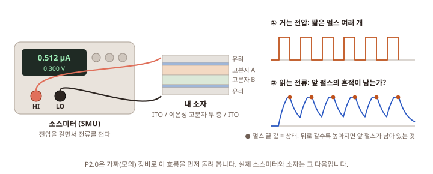
무엇을 하나 소스미터(전압을 걸면서 전류를 재는 장비)로 소자에 짧은 전압 pulse를 여러 개 겁니다. pulse가 끝나는 순간의 전류를 모아, 그 숫자만 보고 "앞에 어떤 pulse가 왔었는지" 맞힐 수 있으면 소자에 기억이 있는 것입니다. 처음에는 VS Code에서 컴퓨터 속 가짜 장비로 연습합니다.
이 프로젝트를 끝내면 얻는 것 (1) 가짜 장비로 얻은 점수 두 개: 기억 있는 가짜 소자 1.00, 기억 없는 가짜 저항 0.61 (아무렇게나 찍으면 0.50). (2) 진짜 장비가 있으면, 내 소자의 특성표 한 장(쓸 전압 범위, 전류 범위, 흔적이 사라지는 시간).
왜 하나 P1에서는 수식 모형으로 "흔적이 남는 시간이 과제와 맞아야 쓸모 있다"를 봤습니다. 이제 같은 질문을 진짜 소자에 던집니다. 기억이 안 보여도 그 기록이 결과입니다.
- 준비VS Code · mylabs 폴더
- →
- P2.0 mock 장비로 한 바퀴실습 1–4 · 학습 40–60분
- →
- P2.0R 저항·RC 실측실습 5 · 소스미터 필요
- →
- P2.1 소자 특성실습 6–7 · 특성표
- →
- P2.2 작은 과제끝만 보고 앞을 기억하나 · 실습 8
- →
- P2.3 (선택) ECG실습 9
- 준비물: 처음 한 번: 내 컴퓨터 준비하기를 끝낸 PC. 소스미터·소자는 아직 필요 없습니다.
- 완료 기준: P2.0의 실습 1–4를 ▷ 실행하고 결과 그림을 확인하면 끝입니다. "관찰 적기"를 글로 쓰는 것은 선택입니다. (P2.1부터 실제 소자를 재면 날짜·소자 이름·조건 같은 측정 기록은 꼭 남깁니다. 이것은 감상이 아니라 연구 데이터입니다.)
- 실제 장비는 다음 단계: 소스미터를 쓰는 실행은 P2.0R부터입니다. P2.1까지 기록이 남으면 수준 2입니다. 기억이 보이지 않아도 그 단계는 끝난 것입니다.
이야기부터: 이 프로젝트가 알아내려는 것
내 소자는 유리판 두 장 사이에 이온성 고분자 두 층을 끼운 것입니다. 여기에 전압을 걸면 전류가 흐릅니다. 궁금한 것은 이것입니다. 전류가 지금 건 전압만 따라갈까요? 아니면 조금 전에 걸었던 전압의 흔적도 섞여 나올까요?
P1.2의 머그컵을 떠올려 보세요. 뜨거운 물을 버린 뒤에도 컵이 따뜻하면 "조금 전에 물이 있었구나"를 알 수 있었습니다. 소자도 같은 방법으로 봅니다. 0.5 V를 1초 걸었다가 끄고, 곧바로 아주 작은 전압으로 전류를 재 봅니다. 아무것도 안 걸었던 소자와 전류가 다르면 0.5 V의 흔적이 남아 있는 것입니다. 이것이 이 프로젝트에서 말하는 기억입니다.
pulse: 전압을 짧게 걸었다가 바꾸는 것 한 번. 예: 0.5 V를 0.05초(50 ms) 동안.
소스미터 (SMU = source measure unit): 전압을 걸면서 동시에 흐르는 전류를 재는 장비. 이 프로젝트의 유일한 측정 장비입니다.
µA (마이크로암페어): 전류의 단위. 1 µA = 0.000001 A. 이 프로젝트의 전류는 대부분 0.01–1 µA입니다.
mock (가짜 장비): 진짜 SMU 대신 정해진 수식으로 전류를 만들어 주는 컴퓨터 속 가짜 장비. 비행 시뮬레이터처럼 순서를 익히는 데만 씁니다. mock 결과는 실제 소자에 대해 아무것도 말해 주지 않습니다.
이 프로젝트는 두 가지를 차례로 묻습니다.
준비: VS Code와 mylabs 폴더
처음이라면 처음 한 번: 내 컴퓨터 준비하기를 먼저 끝냅니다. P1을 했다면 준비는 끝난 것입니다.
모든 실습은 P1과 같은 순서입니다. mylabs 폴더에 마우스 오른쪽 단추 → New File → 실습마다 적힌 파일 이름 → 코드 상자 오른쪽 위 복사 아이콘 → Ctrl+V → Ctrl+S → ▷. 그림 창을 모두 닫아야 프로그램이 끝납니다.
P2 실습은 P1과 두 가지가 다릅니다.
- 코드 맨 위에서
python폴더의 공용 코드(측정·채점 프로그램)를 불러 씁니다. 그래서mylabs가ion-projects-code폴더 안에 있어야 합니다(준비 페이지대로 만들었으면 그렇습니다). - 결과 파일이
ion-projects-code\runs폴더에 저장되고, 다음 실습이 그 파일을 읽습니다. 실습 순서를 지켜 주세요.
P2.0. mock 장비로 한 바퀴 (장비 없음, 40–60분)
운전을 배울 때 진짜 도로 전에 연습장을 돕니다. P2.0이 그 연습장입니다. 진짜 장비에서 쓸 같은 코드를 mock 장비로 돌려, 측정이 어떤 순서로 흘러가는지 눈으로 봅니다.
| 실습 | 하는 일 | 결과로 보는 것 |
|---|---|---|
| 1 | 시험 문제(입력) 만들기 | 입력 12칸이 mask를 거쳐 pulse 48개가 되는 그림 |
| 2 | mock 측정 | 건 전압·흐른 전류 곡선, 마지막 4칸에서 class끼리 전류가 다른가 |
| 3 | readout 채점 | 기억 있는 가짜 소자 1.00 vs 가짜 저항 0.61 |
| 4 | mock RC 쓰기–쉬기–읽기 | capacitor 하나로도 "기억처럼 보이는" 흔적 |
과제: 끝 4칸만 보고, 앞에서 무슨 일이 있었는지 맞히기
P1.2와 같은 과제입니다. 입력은 12칸입니다. 큰 입력 3개가 앞쪽 4칸에 오거나(class 0) 가운데 4칸에 옵니다(class 1). 마지막 4칸은 둘 다 똑같이 작은 입력입니다. 마지막 4칸 동안의 전류만 보고 class를 맞히면, 소자가 앞 칸을 기억하고 있다는 뜻입니다.
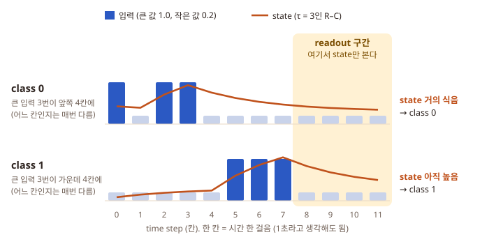
trial: 시험 문제 한 개 = 12칸 입력 한 줄을 소자에 걸고 전류를 재는 것 한 번.
class: 정답 이름. 큰 입력이 앞쪽(0–3칸)이면 class 0, 가운데(4–7칸)면 class 1.
readout: 잰 숫자를 보고 답(class 0인지 1인지)을 내는 일. 여기서는 마지막 4칸 동안의 숫자만 봅니다(end-only readout).
실습 1. 시험 문제 만들기: 입력 한 칸이 pulse 4개가 된다 (p2_1_task.py)
소자에 무엇을 걸지 먼저 눈으로 봅니다. 12칸 입력 40줄(class마다 20줄)을 만들어 파일로 저장하고, 그중 한 줄이 실제로 어떤 전압 pulse가 되는지 그림으로 그립니다.
입력 한 칸은 pulse 하나가 아니라 높이가 다른 pulse 4개로 겁니다. 이 높이를 정하는 숫자 4개가 mask입니다. 같은 입력을 네 가지 세기로 걸어 소자의 반응을 네 번 다르게 보려는 것입니다(같은 물건을 앞·옆·뒤·위에서 찍으면 더 잘 알아보듯이).
mask: pulse 4개의 높이를 정하는 고정된 숫자 4개 [0.84, 0.43, 0.97, 0.61]. pulse 높이(V) = 0.8 × 입력 × mask. 모든 칸, 모든 trial에 같은 mask를 씁니다. 그래서 12칸 × mask 4개 = pulse 48개가 됩니다.
할 일 mylabs에 새 파일 p2_1_task.py → 아래 코드 붙여 넣기 → Ctrl+S → ▷.
mylabs/p2_1_task.py
# ============================================================
# P2 실습 1 · 시험 문제(입력) 만들기: 12칸 입력이 pulse 48개가 되기까지
#
# 전체 과정:
#
# 12칸 입력 한 줄 = trial 하나 (P1 실습 5와 같은 과제)
# class 0: 큰 입력(1.0) 3개가 앞쪽 4칸(0–3) 안에
# class 1: 큰 입력(1.0) 3개가 가운데 4칸(4–7) 안에
# 나머지 칸은 작은 입력(0.2). 마지막 4칸(8–11)은 두 class가 똑같다
# ↓
# trial을 class마다 N_PER_CLASS개 → 파일로 저장 (다음 실습들이 읽음)
# ↓
# 입력 한 칸 u → mask 4개를 곱해 높이가 다른 pulse 4개
# pulse 높이(V) = 0.8 × u × mask
# 그래서 12칸 → pulse 12 × 4 = 48개
# ↓
# 그래프: 입력 12칸 · mask · 소자에 걸 전압(pulse 48개)
#
# 이 실습은 장비가 필요 없습니다. 소자에 "무엇을" 걸지 눈으로 봅니다.
# ============================================================
import json
import sys
from pathlib import Path
import numpy as np
import matplotlib.pyplot as plt
# 공용 코드(python 폴더)를 쓸 수 있게 경로를 잡는다.
# 이 파일은 ion-projects-code\mylabs 안에 있으므로, 두 단계 위가 ion-projects-code 폴더.
CODE = Path(__file__).resolve().parent.parent # ion-projects-code 폴더
sys.path.insert(0, str(CODE / "python")) # 공용 코드 폴더를 찾을 수 있게
from tasks import timing_task, feature_columns # python/tasks.py의 과제 만드는 함수
# ============================================================
# 0. 그림 설정 — 건드리지 않아도 됩니다
# ============================================================
plt.rcParams.update({
"font.family": "Malgun Gothic", "axes.unicode_minus": False, "font.size": 11,
"legend.frameon": False, "axes.spines.top": False, "axes.spines.right": False,
})
# ============================================================
# 1. 바꿔 볼 수 있는 설정값 ← 여기를 바꿔 보세요
# ============================================================
N_PER_CLASS = 20 # class마다 trial 몇 개 (모두 2배). P2.2의 진짜 소자 측정에서는 40
SHOW_TRIAL = 0 # 그래프로 볼 trial 번호 (0부터)
TASK_NAME = "task_p2" # 저장할 파일 이름 → ion-projects-code\runs\task_p2.npz
# ============================================================
# 2. 측정 조건 읽기 (설정 파일 config_example.json)
# ============================================================
#
# pulse 높이·길이는 실험 조건이라 설정 파일에 한 번만 적어 둔다.
# 다음 실습의 측정도 같은 파일을 읽으므로, 여기서 보는 pulse가 그대로 소자에 걸린다.
# ============================================================
cfg = json.loads((CODE / "python" / "config_example.json").read_text(encoding="utf-8"))
enc = cfg["encoding"]
MASK = np.array(enc["mask"]) # [0.84, 0.43, 0.97, 0.61]
VA = enc["VA"] # 0.8 V: 입력 1.0 × mask 1.0일 때의 높이
THETA = enc["theta_s"] # pulse 하나의 길이 0.05초
M = len(MASK) # mask 개수 4
# ============================================================
# 3. trial 만들기 (python/tasks.py의 timing_task)
# ============================================================
U, y, groups, steps = timing_task(N_PER_CLASS) # U: trial × 12칸, y: 정답 class
n = len(y)
n_train = int(n * 0.7) # 앞 70%로 readout을 가르치고, 뒤 30%로 시험 (이미 섞인 순서)
out = CODE / "runs" / f"{TASK_NAME}.npz"
out.parent.mkdir(exist_ok=True)
np.savez(out, U=U, y=y, groups=groups, readout_steps=steps,
end_cols=feature_columns(steps, M), # 마지막 4칸의 pulse 16개 번호
train_idx=np.arange(n_train), test_idx=np.arange(n_train, n))
# ============================================================
# 4. 글자로 확인: 앞 6개 trial을 # (큰 입력) 과 . (작은 입력) 으로
# ============================================================
print("=" * 56)
print(f"task: {n} trials (class 0: {np.sum(y == 0)}, class 1: {np.sum(y == 1)})")
print(f"train {n_train} / test {n - n_train}, readout steps {steps.tolist()}")
print("=" * 56)
print("trial class step" + "".join(f"{s:>3}" for s in range(12)))
for i in range(6):
marks = "".join(f"{'#' if u > 0.5 else '.':>3}" for u in U[i])
print(f"{i:>5} {y[i]:>5} {marks}")
print("(# = big input 1.0, . = small input 0.2)")
print()
u_big, u_small = 1.0, 0.2
print("one input step -> 4 pulses: height = 0.8 V x u x mask")
print(f" mask : {MASK.tolist()}")
print(f" u = 1.0 (big) -> {np.round(VA * u_big * MASK, 2).tolist()} V")
print(f" u = 0.2 (small) -> {np.round(VA * u_small * MASK, 2).tolist()} V")
print(f"pulses per trial : {U.shape[1]} steps x {M} masks = {U.shape[1] * M}")
print(f"saved: runs/{TASK_NAME}.npz")
# ============================================================
# 5. 그래프: 입력 12칸 → mask → pulse 48개
# ============================================================
k = SHOW_TRIAL
u_row = U[k]
heights = np.array([VA * u * m for u in u_row for m in MASK]) # pulse 48개의 높이
t0 = np.arange(len(heights)) * THETA # 각 pulse가 시작하는 시각
BIG, SMALL, ZONE = "#2b59c3", "#a9bde8", "#fdf0c2"
fig = plt.figure(figsize=(8, 7.4))
gs = fig.add_gridspec(3, 2, height_ratios=[1, 1, 1.25], width_ratios=[1, 1.5], hspace=0.75, wspace=0.35)
# (위) 입력 12칸
ax1 = fig.add_subplot(gs[0, :])
ax1.axvspan(7.5, 11.5, color=ZONE, zorder=0)
ax1.bar(range(12), u_row, color=[BIG if u > 0.5 else SMALL for u in u_row], width=0.7)
ax1.set_xticks(range(12))
ax1.set_xlim(-0.6, 11.6)
ax1.set_ylim(0, 1.25)
ax1.set_ylabel("입력 u")
ax1.set_xlabel("칸 (time step)")
ax1.set_title(f"① trial {k}의 입력 12칸 (class {y[k]}). 노란 칸 = 마지막 4칸 (두 class가 같음)", loc="left")
# (가운데 왼쪽) mask 4개
ax2 = fig.add_subplot(gs[1, 0])
ax2.bar(range(M), MASK, color="#e08a3c", width=0.6)
ax2.set_xticks(range(M), [f"mask {j}" for j in range(M)], fontsize=9)
ax2.set_ylim(0, 1.15)
ax2.set_title("② mask 4개 (늘 같은 숫자)", loc="left")
# (가운데 오른쪽) 큰 입력 한 칸 → pulse 4개 (확대)
big_step = int(np.argmax(u_row > 0.5))
ax3 = fig.add_subplot(gs[1, 1])
hb = VA * u_row[big_step] * MASK
ax3.bar(np.arange(M) * THETA * 1000 + THETA * 500, hb, width=THETA * 1000 * 0.92, color=BIG)
for j, h in enumerate(hb):
ax3.text(j * THETA * 1000 + THETA * 500, h + 0.03, f"{h:.2f}", ha="center", va="bottom", fontsize=9)
ax3.set_ylim(0, 1.0)
ax3.set_xlim(0, M * THETA * 1000)
ax3.set_xlabel("시간 (ms)")
ax3.set_ylabel("전압 (V)")
ax3.set_title(f"③ {big_step}번 칸(u = 1.0) → pulse 4개 = 0.8 × 1.0 × mask", loc="left")
# (아래) trial 전체: pulse 48개
ax4 = fig.add_subplot(gs[2, :])
ax4.axvspan(8 * M * THETA, 12 * M * THETA, color=ZONE, zorder=0)
ax4.bar(t0 + THETA / 2, heights, width=THETA * 0.92,
color=[BIG if u_row[i // M] > 0.5 else SMALL for i in range(len(heights))])
for s in range(1, 12):
ax4.axvline(s * M * THETA, color="0.85", lw=0.8, zorder=0)
ax4.set_xlim(0, 12 * M * THETA)
ax4.set_ylim(0, 1.0)
ax4.set_xlabel("시간 (s) · 회색 세로줄 = 칸의 경계 (칸 하나 = pulse 4개 = 0.2초)")
ax4.set_ylabel("전압 (V)")
ax4.set_title("④ 소자에 걸 전압: pulse 48개 (진한 파랑 = 큰 입력의 pulse)", loc="left")
plt.show() # 그림 창을 닫으면 프로그램이 끝납니다.코드에서 볼 곳.
- 맨 위
CODE = …,sys.path.insert(…)두 줄:python폴더의 공용 코드를 찾을 수 있게 길을 알려 줍니다. P2의 모든 실습 맨 위에 똑같이 있습니다. - 2번 상자: pulse 높이·길이를 설정 파일
config_example.json에서 읽습니다. 다음 실습의 측정도 같은 파일을 읽으므로, 여기서 그린 pulse가 그대로 소자에 걸립니다. - 3번 상자:
timing_task가 입력을 만들고, 앞 70%(28개)는 연습용(train), 뒤 30%(12개)는 시험용(test)으로 나눠 저장합니다.
▷ 실행하면:
PS C:\Users\내이름\Desktop\ion-projects-code> & python mylabs/p2_1_task.py
========================================================
task: 40 trials (class 0: 20, class 1: 20)
train 28 / test 12, readout steps [8, 9, 10, 11]
========================================================
trial class step 0 1 2 3 4 5 6 7 8 9 10 11
0 1 . . . . . # # # . . . .
1 1 . . . . . # # # . . . .
2 1 . . . . # # . # . . . .
3 1 . . . . # # . # . . . .
4 0 . # # # . . . . . . . .
5 0 . # # # . . . . . . . .
(# = big input 1.0, . = small input 0.2)
one input step -> 4 pulses: height = 0.8 V x u x mask
mask : [0.84, 0.43, 0.97, 0.61]
u = 1.0 (big) -> [0.67, 0.34, 0.78, 0.49] V
u = 0.2 (small) -> [0.13, 0.07, 0.16, 0.1] V
pulses per trial : 12 steps x 4 masks = 48
saved: runs/task_p2.npz
PS C:\Users\내이름\Desktop\ion-projects-code>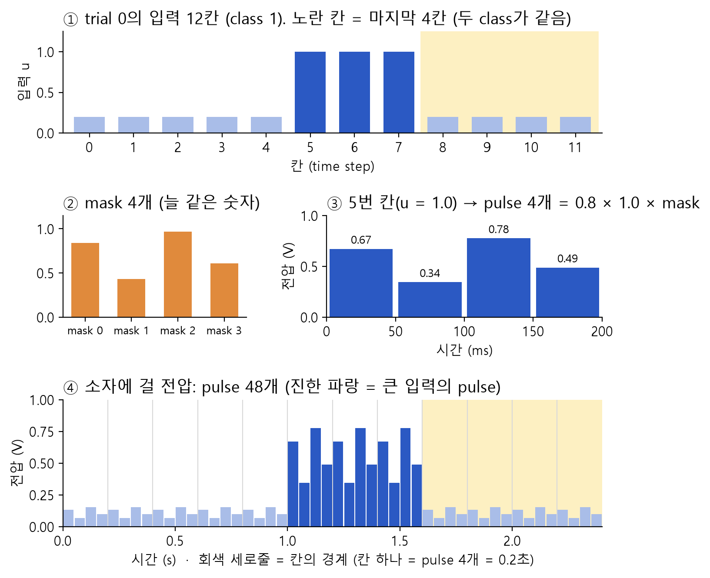
결과가 뜻하는 것. TERMINAL의 #·. 줄은 trial마다 큰 입력이 어디 있는지 보여 줍니다. trial 0은 5·6·7칸에 큰 입력이 있으니 class 1입니다. 큰 입력 칸의 pulse는 0.34–0.78 V, 작은 입력 칸은 0.07–0.16 V입니다. 모든 pulse가 설정 파일의 상한(v_limit_V = 1.0 V) 안에 있어서 코드가 거부하지 않습니다. 이 1.0 V는 mock 연습용 설정 상한일 뿐이고, 내 소자에 안전하다는 근거는 아닙니다. 실제 소자가 견디는 전압은 쓸 전압 범위에서 작은 값부터 직접 찾습니다.
SHOW_TRIAL = 0을 4로 바꾸고 Ctrl+S → ▷. 그림 ①·④가 어떻게 바뀌나요?
trial 4는 class 0이라, 큰 입력(진한 파랑)이 앞쪽 1·2·3칸으로 옮겨 갑니다. 그림 ④에서도 높은 pulse 12개가 앞쪽(0.2–0.8초)에 모입니다. 마지막 4칸(노란 칸)은 trial 0과 똑같습니다. 그래서 마지막 4칸의 입력만으로는 class를 알 수 없습니다.
실습 2. mock 측정: pulse 48개를 걸고 전류 모으기 (p2_2_measure.py)
실습 1의 trial 40개를 mock 장비에 차례로 겁니다. trial마다 먼저 0 V로 2초 쉬고(앞 trial의 흔적 지우기), pulse 48개를 걸며 전류를 계속 읽습니다. 그중 각 pulse가 끝나기 직전의 전류 1개를 모아 trial마다 숫자 48개를 저장합니다. 이 숫자가 소자의 state입니다.
그다음 "마지막 4칸에서 class 0과 class 1의 전류가 다른가"를 그래프로 봅니다. 다르면 실습 3의 readout이 그 차이로 답을 맞힐 수 있습니다.
state: pulse 하나가 끝나기 직전의 전류. "그 순간 소자의 상태"로 씁니다. trial 하나에 48개.
MOCK_MODEL: mock 장비 안에 넣는 가짜 소자. "memory"는 지난 전압에 따라 천천히 변하는 기억 있는 가짜 소자, "resistor"는 지금 전압에만 비례하는 기억 없는 저항입니다.
할 일 mylabs에 새 파일 p2_2_measure.py → 붙여 넣기 → Ctrl+S → ▷.
mylabs/p2_2_measure.py
# ============================================================
# P2 실습 2 · 측정: pulse 48개를 걸고, pulse 끝 전류를 모은다
#
# 전체 과정:
#
# 실습 1이 저장한 시험 문제 (runs\task_p2.npz) 읽기
# ↓
# 장비 열기: MOCK = True 이면 컴퓨터 속 가짜 장비(mock SMU)
# MOCK = False 이면 진짜 소스미터 (P2.0R부터)
# ↓
# trial 하나마다:
# 0 V로 2초 쉬기 (rest: 앞 trial의 흔적 지우기)
# → pulse 48개를 차례로 걸며 전류를 계속 읽기
# → 각 pulse가 끝나기 직전의 전류 1개 = state (숫자 48개)
# ↓
# runs\<폴더> 에 저장 (실습 3의 readout이 읽음)
# ↓
# 그래프 ① trial 하나의 전압·전류 ② class 0 / 1의 평균 state
# ============================================================
import json
import shutil
import sys
from pathlib import Path
import numpy as np
import matplotlib.pyplot as plt
CODE = Path(__file__).resolve().parent.parent # ion-projects-code 폴더
sys.path.insert(0, str(CODE / "python")) # 공용 코드 폴더를 찾을 수 있게
from smu import open_smu # 장비(진짜 또는 mock)를 여는 함수
from measure_seq import check_inputs, run_trials, smu_trial_fn # 측정 순서 (P2 공용)
# ============================================================
# 0. 그림 설정 — 건드리지 않아도 됩니다
# ============================================================
plt.rcParams.update({
"font.family": "Malgun Gothic", "axes.unicode_minus": False, "font.size": 11,
"legend.frameon": False, "axes.spines.top": False, "axes.spines.right": False,
})
# ============================================================
# 1. 바꿔 볼 수 있는 설정값 ← 여기를 바꿔 보세요
# ============================================================
MOCK = True # True = 가짜 장비 (장비 없이 연습). False = 진짜 소스미터
MOCK_MODEL = "memory" # mock 안의 가짜 소자: "memory" (기억 있음) 또는 "resistor" (기억 없음)
TASK_NAME = "task_p2" # 실습 1이 만든 시험 문제 파일 이름
SHOW_TRIAL = 0 # 그래프 ①로 볼 trial 번호
# --- 진짜 장비일 때만 쓰는 값 (MOCK = False) ---
ADDR = "GPIB0::24::INSTR" # NI MAX에서 찾은 장비 주소
COMPLIANCE_A = 1e-5 # 전류 제한 10 µA: 이보다 큰 전류는 장비가 막음
DEVICE_ID = "R1M_test" # 지금 잰 시료 이름 (기록에 남음)
RUN_NAME = "r1M" # 결과 폴더 이름 → runs\r1M (시료·조건마다 새 이름)
LIMIT = None # 처음 몇 trial만 잴지. 예: 3. None = 전부
# ============================================================
# 2. 측정 조건 (config_example.json) + 위 설정값 반영
# ============================================================
cfg = json.loads((CODE / "python" / "config_example.json").read_text(encoding="utf-8"))
inst, enc = cfg["instrument"], cfg["encoding"]
if MOCK:
inst["mock"]["model"] = MOCK_MODEL
run_dir = CODE / "runs" / f"mock_{MOCK_MODEL}"
# mock 기록은 몇 초면 다시 만들 수 있으므로 매번 지우고 새로 잰다.
# (진짜 측정 기록은 절대 지우지 않는다. 아래 run_trials가 이어서 잰다.)
shutil.rmtree(run_dir, ignore_errors=True)
else:
inst["addr"] = ADDR
inst["compliance_A"] = COMPLIANCE_A
cfg["device"]["id"] = DEVICE_ID
run_dir = CODE / "runs" / RUN_NAME
task = np.load(CODE / "runs" / f"{TASK_NAME}.npz")
U, y = task["U"], task["y"]
check_inputs(U, enc, inst["v_limit_V"]) # 전압 상한(1.0 V)을 넘는 pulse가 없는지 먼저 확인
M = len(enc["mask"])
n_feat = U.shape[1] * M # 12칸 × 4 = 48
# ============================================================
# 3. 측정 (python/measure_seq.py의 run_trials)
# ============================================================
#
# trial 하나가 끝날 때마다 바로 파일로 저장한다.
# 진짜 장비에서 중간에 멈춰도(케이블 빠짐, Ctrl+C) 같은 파일을 다시 ▷ 하면
# 이미 잰 trial은 건너뛰고 이어서 잰다 (설정이 바뀌었으면 섞이지 않게 거부).
# ============================================================
def log(msg):
"""trial 10개마다 한 줄만 찍기 (40줄이 다 찍히면 읽기 어려워서)"""
if msg.startswith("trial"):
k = int(msg.split("(")[1].split("/")[0])
if k % 10 and k != len(U):
return
print(" ", msg)
nominal = len(U) * (enc["rest_s"] + n_feat * enc["theta_s"])
print("=" * 56)
print(f"{len(U)} trials x {n_feat} pulses, nominal time {nominal / 60:.1f} min")
with open_smu(inst, mock=MOCK) as smu:
print(f"instrument : {smu.idn}" + (f" (model: {MOCK_MODEL})" if MOCK else ""))
smu.enable() # 이때부터 전압이 걸린다
S, done = run_trials(cfg, U, str(run_dir), smu_trial_fn(smu, enc), n_feat,
limit=LIMIT, log=log, extra={"y": y, "groups": task["groups"]})
print(f"saved : runs/{run_dir.name} ({done.sum()}/{len(done)} trials)")
print("=" * 56)
# ============================================================
# 4. 숫자로 보기: 마지막 4칸에서 class 0과 1의 state가 다른가?
# ============================================================
#
# state = pulse 끝 전류. 마지막 4칸(8–11)의 입력은 두 class가 똑같다.
# 그런데도 전류가 다르면, 그 차이는 '앞에서 받은 입력의 흔적'에서 온 것.
# 실습 3의 readout은 바로 이 차이를 써서 답을 맞힌다.
# ============================================================
ok = done
mean0 = S[ok & (y == 0)].mean(0) * 1e6 # class 0 평균 (µA)
mean1 = S[ok & (y == 1)].mean(0) * 1e6
step0 = mean0.reshape(-1, M).mean(1) # 칸마다 pulse 4개 평균
step1 = mean1.reshape(-1, M).mean(1)
print()
print("mean state in the last 4 steps (uA, average of 4 pulses)")
print("step class 0 class 1 1 minus 0")
for s in range(8, 12):
diff = round(step1[s] - step0[s], 3) + 0.0 # + 0.0: -0.000이 0.000으로 찍히게
print(f"{s:>4} {step0[s]:7.3f} {step1[s]:7.3f} {diff:+8.3f}")
# ============================================================
# 5. 그래프 ① trial 하나: 건 전압과 흐른 전류
# ============================================================
k = SHOW_TRIAL
with np.load(run_dir / "raw" / f"trial_{k:05d}.npz") as d:
t, v, cur, p = d["t_host"] - d["t_host"][0], d["V_set"], d["I"] * 1e6, d["pulse"]
ends = [np.where(p == j)[0][-1] for j in range(n_feat)] # pulse마다 마지막 읽기
t_start = t[np.where(p == 0)[0][0]] # 첫 pulse 시작 = 쉬기 끝
zone = (t[np.where(p == 8 * M)[0][0]], t[-1]) # 마지막 4칸 = pulse 32–47
fig, ax = plt.subplots(2, 1, figsize=(8, 5.6), sharex=True)
for a in ax:
a.axvspan(*zone, color="#fdf0c2", zorder=0)
a.axvspan(0, t_start, color="0.93", zorder=0)
ax[0].step(t, v, where="post", color="#2b59c3", lw=1.2)
ax[0].set_ylabel("건 전압 (V)")
ax[0].set_ylim(-0.05, 1.0)
ax[0].set_title(f"① trial {k} (class {y[k]}) · 회색 = 0 V 쉬기, 노랑 = 마지막 4칸", loc="left")
ax[1].plot(t, cur, color="0.45", lw=1, label="전류 (계속 읽은 값)")
ax[1].plot(t[ends], cur[ends], ".", color="#c0392b", ms=6, label="pulse 끝 전류 = state (48개)")
ax[1].set_ylabel("전류 (µA)")
ax[1].set_xlabel("시간 (s)")
fig.tight_layout(rect=(0, 0.07, 1, 1))
fig.legend(*ax[1].get_legend_handles_labels(), loc="lower center", ncol=2)
# ============================================================
# 6. 그래프 ② class 0 / class 1의 평균 state (칸마다) + ③ 마지막 4칸의 차이
# ============================================================
fig2, (ax2, ax3) = plt.subplots(1, 2, figsize=(8, 4.0), gridspec_kw={"width_ratios": [1.6, 1]})
ax2.axvspan(7.5, 11.5, color="#fdf0c2", zorder=0)
ax2.plot(range(12), step0, "o-", color="#2b59c3", lw=2, label="class 0 (큰 입력이 앞쪽 0–3칸)")
ax2.plot(range(12), step1, "s--", color="#e08a3c", lw=2, label="class 1 (큰 입력이 가운데 4–7칸)")
ax2.set_xticks(range(12))
ax2.set_xlabel("칸 (time step)")
ax2.set_ylabel("평균 state (µA)")
ax2.set_title(f"② 칸마다 평균 state ({'mock ' + MOCK_MODEL if MOCK else RUN_NAME})", loc="left")
# 오른쪽: 마지막 4칸의 pulse 16개에서 "class 1 평균 − class 0 평균"
# 막대가 0이면 두 class의 state가 같다 = 마지막 4칸만 봐서는 구별할 단서가 없다
xs = np.arange(8 * M, 12 * M)
diff16 = mean1[xs] - mean0[xs]
lim = max(0.05, 1.15 * np.abs(diff16).max()) # 차이가 아주 작으면 ±0.05 µA로 고정 (작은 흔들림을 부풀리지 않게)
ax3.set_facecolor("#fdf0c2")
ax3.bar(xs, diff16, width=0.75, color=["#e08a3c" if d > 0 else "#2b59c3" for d in diff16])
ax3.axhline(0, color="0.3", lw=0.8)
ax3.set_ylim(-lim, lim)
ax3.set_ylabel("class 1 - class 0 (µA)")
ax3.set_xticks([8 * M + 1.5 + M * j for j in range(4)], [str(8 + j) for j in range(4)])
ax3.set_xlabel("칸 (pulse 16개)")
ax3.set_title("③ 마지막 4칸의 차이", loc="left")
fig2.tight_layout(rect=(0, 0.1, 1, 1))
fig2.legend(*ax2.get_legend_handles_labels(), loc="lower center", ncol=2)
plt.show() # 그림 창 두 개를 모두 닫으면 프로그램이 끝납니다.코드에서 볼 곳.
- 1번 상자: 위쪽 네 줄만 씁니다. 아래 "진짜 장비일 때만" 다섯 줄은 P2.0R부터 씁니다.
MOCK = False로 바꾸면 같은 파일이 진짜 소스미터를 씁니다. - 3번 상자
run_trials: trial 하나가 끝날 때마다 바로 파일로 저장합니다. 진짜 장비에서 중간에 멈춰도 같은 파일을 다시 ▷ 하면 이어서 잽니다. - 4번 상자: 마지막 4칸(8–11)의 평균 전류를 class별로 비교합니다. 이 차이가 readout의 단서입니다.
▷ 실행하면 1초 안에 끝나고, 그림 창이 두 개 뜹니다.
PS C:\Users\내이름\Desktop\ion-projects-code> & python mylabs/p2_2_measure.py
========================================================
40 trials x 48 pulses, nominal time 2.9 min
instrument : MOCK SMU (model: memory)
trial 9 saved (10/40)
trial 19 saved (20/40)
trial 29 saved (30/40)
trial 39 saved (40/40)
saved : runs/mock_memory (40/40 trials)
========================================================
mean state in the last 4 steps (uA, average of 4 pulses)
step class 0 class 1 1 minus 0
8 0.128 0.104 -0.024
9 0.127 0.138 +0.011
10 0.126 0.133 +0.007
11 0.126 0.130 +0.004
PS C:\Users\내이름\Desktop\ion-projects-code>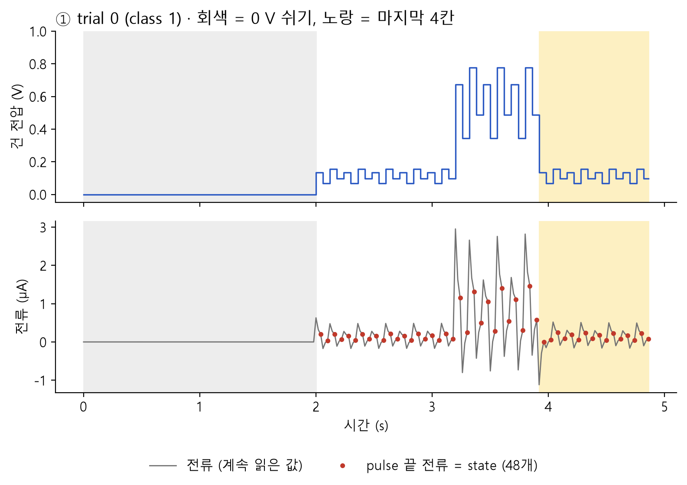
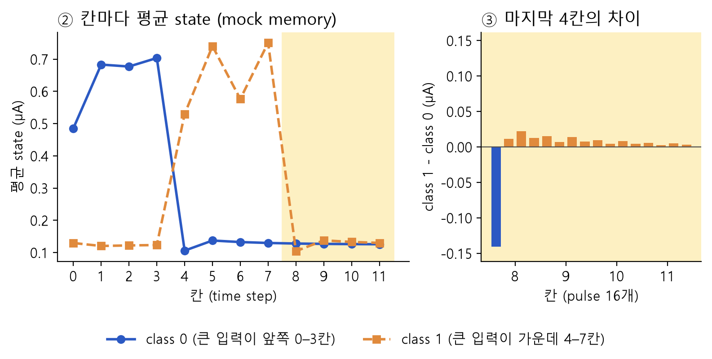
결과가 뜻하는 것. 그림 4의 왼쪽에서 마지막 4칸은 두 선이 거의 겹쳐 보입니다. 그런데 오른쪽처럼 차이만 키워 보면 0이 아닙니다. 8칸 첫 pulse는 class 1이 0.14 µA 낮고, 뒤로 갈수록 class 1이 조금 높습니다. 마지막 4칸의 입력은 같았으니, 이 차이는 앞 칸들이 남긴 흔적입니다.
(실습 3에 필요) MOCK_MODEL = "memory"를 "resistor"로 바꾸고 Ctrl+S → ▷. 기억 없는 저항이면 그림 ③이 어떻게 될까요? 이 실행 결과(runs\mock_resistor)를 실습 3이 씁니다.
그림 ③의 막대가 모두 0입니다. 저항은 지금 전압에만 비례하므로, 마지막 4칸의 전압이 같으면 전류도 같습니다. TERMINAL의 1 minus 0 열도 모두 +0.000입니다.
PS C:\Users\내이름\Desktop\ion-projects-code> & python mylabs/p2_2_measure.py
========================================================
40 trials x 48 pulses, nominal time 2.9 min
instrument : MOCK SMU (model: resistor)
trial 9 saved (10/40)
trial 19 saved (20/40)
trial 29 saved (30/40)
trial 39 saved (40/40)
saved : runs/mock_resistor (40/40 trials)
========================================================
mean state in the last 4 steps (uA, average of 4 pulses)
step class 0 class 1 1 minus 0
8 0.114 0.114 +0.000
9 0.114 0.114 +0.000
10 0.114 0.114 +0.000
11 0.114 0.114 +0.000
PS C:\Users\내이름\Desktop\ion-projects-code>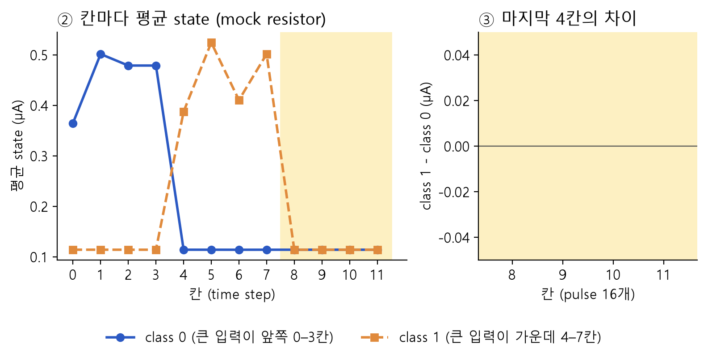
MOCK_MODEL = "resistor"의 둘째 그림 창. 마지막 4칸에서 두 선이 완전히 겹치고(②), 차이 막대가 없습니다(③).
실습 3. readout 채점: 마지막 4칸 전류만 보고 맞힐 수 있나 (p2_3_readout.py)
실습 2에서 잰 두 기록(가짜 소자, 가짜 저항)을 똑같은 방법으로 채점합니다. 마지막 4칸의 숫자 16개만 보고 class를 맞히는 규칙을 연습 문제 28개로 정하고, 그 규칙으로 시험 문제 12개를 풉니다.
같은 채점을 기억 없는 저항에도 하는 이유는 비교 대상(control)이 있어야 "기억 덕분에 맞혔다"고 말할 수 있기 때문입니다. 정답지를 섞어서 한 번 더 채점하는 label shuffle은 채점 코드가 정답을 몰래 보고 있지 않은지 확인하는 점검입니다.
train / test: 규칙을 정하는 데 쓰는 연습 문제(train)와, 다 정한 뒤 점수만 매기는 시험 문제(test). 연습 문제를 그대로 시험에 내면 점수가 부풀기 때문에 나눕니다.
balanced accuracy: 맞힌 비율. class 0 문제와 class 1 문제를 따로 채점해서 평균을 냅니다. 한쪽 답만 계속 찍으면 0.50이 되어 들통납니다. chance(아무렇게나 찍을 때)는 0.50.
label shuffle: 정답지(label)를 일부러 섞고 똑같이 채점하는 점검. 0.50 근처가 나와야 정상입니다. 높게 나오면 계산 어딘가에서 정답이 새고 있다는 경고입니다.
control (비교 대상): 결과를 비교하려고 같이 재는 "답을 아는 것". 새 비료가 효과 있는지 보려면 비료 안 준 화분도 같이 키우는 것과 같습니다. 여기서는 기억 없는 저항이 비료 안 준 화분입니다.
할 일 먼저 실습 2를 MOCK_MODEL = "resistor"로 한 번 더 ▷ 했는지 확인합니다(EXPLORER의 runs 안에 mock_resistor 폴더가 있어야 함). 그다음 mylabs에 새 파일 p2_3_readout.py → 붙여 넣기 → Ctrl+S → ▷. 약 20–30초 걸립니다(정답지를 20번 섞어 다시 채점하느라).
mylabs/p2_3_readout.py
# ============================================================
# P2 실습 3 · readout 채점: 마지막 4칸의 전류만 보고 class를 맞힐 수 있나
#
# 전체 과정:
#
# 실습 2가 저장한 측정 기록 (runs\mock_memory, runs\mock_resistor) 읽기
# + 실습 1의 시험 문제 파일 (정답 · 연습/시험 나누기)
# ↓
# END_ONLY = True 이면 숫자 48개 중 마지막 4칸의 16개만 쓴다
# ↓
# readout = "숫자 16개에 무게를 곱해 더한 점수가 0보다 크면 class 1"
# 무게는 연습 문제(train 28개)로만 정한다 (logistic regression)
# ↓
# 시험 문제(test 12개)로 채점 → balanced accuracy
# 점검: 정답지를 섞고 똑같이 하면 0.5 근처여야 정상 (label shuffle)
# ↓
# 그래프 ① 측정마다 점수 ② 시험 문제 하나하나의 readout 점수
# ============================================================
import sys
from pathlib import Path
import numpy as np
import matplotlib.pyplot as plt
CODE = Path(__file__).resolve().parent.parent # ion-projects-code 폴더
sys.path.insert(0, str(CODE / "python")) # 공용 코드 폴더를 찾을 수 있게
from readout import fit_select, evaluate, label_shuffle_check # python/readout.py의 채점 함수
# ============================================================
# 0. 그림 설정 — 건드리지 않아도 됩니다
# ============================================================
plt.rcParams.update({
"font.family": "Malgun Gothic", "axes.unicode_minus": False, "font.size": 11,
"legend.frameon": False, "axes.spines.top": False, "axes.spines.right": False,
})
# ============================================================
# 1. 바꿔 볼 수 있는 설정값 ← 여기를 바꿔 보세요
# ============================================================
RUNS = ["mock_memory", "mock_resistor"] # 채점할 측정 폴더 (runs 안). 진짜 측정이면 "a2_dev01" 등
TASK_NAME = "task_p2" # 그 측정에 쓴 시험 문제 파일
END_ONLY = True # True = 마지막 4칸(숫자 16개)만, False = 48개 전부
N_SHUFFLE = 20 # 정답지를 몇 번 섞어 점검할지 (많을수록 느림)
# ============================================================
# 2. 시험 문제 파일: 정답 y, 연습/시험 나누기, 마지막 4칸의 열 번호
# ============================================================
task = np.load(CODE / "runs" / f"{TASK_NAME}.npz")
y, train_idx, test_idx = task["y"], task["train_idx"], task["test_idx"]
groups = task["groups"] # 같은 사람(ECG)의 박동이 연습·시험에 섞이지 않게 쓰는 번호
end_cols = task["end_cols"] # [32, 33, …, 47]: 8–11칸의 pulse 16개
# ============================================================
# 3. 측정 하나를 채점하는 순서
# ============================================================
#
# (1) 연습 문제로 무게 정하기 (fit_select)
# 연습 문제를 다시 5묶음으로 나눠 "무게를 얼마나 조심스럽게 정할지(C)"도 고른다.
# 시험 문제는 이 단계에서 절대 보지 않는다 (보면 점수가 부풀어 오른다).
# (2) 시험 문제에 무게를 곱해 답을 내고 채점 (evaluate)
# balanced accuracy = class 0 문제와 class 1 문제를 따로 채점한 평균
# (3) 정답지를 섞어 같은 일을 N_SHUFFLE번 (label_shuffle_check) → 0.5 근처가 정상
# ============================================================
def score_run(name):
run = CODE / "runs" / name
if not (run / "checkpoint.npz").exists():
raise SystemExit(f"runs/{name} 이 없습니다. 실습 2를 먼저 ▷ 하세요 "
f"(mock_resistor는 실습 2에서 MOCK_MODEL = \"resistor\"로 한 번 더).")
ck = np.load(run / "checkpoint.npz")
S, done = ck["S"], ck["done"]
if "y" in ck and not np.array_equal(ck["y"], y):
raise SystemExit(f"runs/{name} 은 다른 시험 문제로 잰 기록입니다. 실습 2를 다시 ▷ 하세요.")
F = S[:, end_cols] if END_ONLY else S
tr = np.array([i for i in train_idx if done[i]]) # 아직 안 잰 trial은 뺀다
te = np.array([i for i in test_idx if done[i]])
model, gs = fit_select(F[tr], y[tr], groups[tr])
res = evaluate(model, F[te], y[te])
sh_mean, sh_sd = label_shuffle_check(F[tr], y[tr], groups[tr], F[te], y[te], n_perm=N_SHUFFLE)
score = model.decision_function(F[te]) # 시험 문제마다 readout 점수 (0보다 크면 class 1)
return dict(name=name, acc=res["balanced_accuracy"], sh=sh_mean, sh_sd=sh_sd,
right=int(np.trace(np.array(res["confusion"]))), n=len(te),
conf=res["confusion"], score=score, y_te=y[te], n_tr=len(tr))
# ============================================================
# 4. 측정마다 채점하고 표로 찍기
# ============================================================
results = [score_run(name) for name in RUNS]
print("=" * 66)
print(f"readout = {'last 4 steps (16 numbers)' if END_ONLY else 'all 48 numbers'}, "
f"train {results[0]['n_tr']} / test {results[0]['n']}, chance = 0.50")
print("=" * 66)
print("run test right balanced label shuffle")
print(" accuracy (should be near 0.5)")
print("--------------- ---------- -------- --------------------")
for r in results:
print(f"{r['name']:<15} {r['right']:>4} / {r['n']:<3} {r['acc']:.2f} "
f"{r['sh']:.2f} +/- {r['sh_sd']:.2f}")
# ============================================================
# 5. 그래프 ① 측정마다 점수 ② 시험 문제 하나하나의 readout 점수
# ============================================================
n = len(results)
fig = plt.figure(figsize=(8, 6.8))
gs = fig.add_gridspec(2, n, height_ratios=[1, 1.15], hspace=0.85, wspace=0.35)
ax = fig.add_subplot(gs[0, :])
x = np.arange(n)
ax.bar(x - 0.18, [r["acc"] for r in results], width=0.34, color="#2b59c3", label="balanced accuracy (시험 문제)")
ax.bar(x + 0.18, [r["sh"] for r in results], width=0.34, color="#c9cfd8",
yerr=[r["sh_sd"] for r in results], capsize=3, label="label shuffle (점검)")
ax.axhline(0.5, color="#c0392b", lw=1, ls=":", label="chance 0.50 (찍기)")
ax.set_xticks(x, [r["name"] for r in results])
ax.set_xlim(-0.6, n - 0.4)
ax.set_ylim(0, 1.12)
ax.set_ylabel("맞힌 비율")
ax.set_title(f"① 측정마다 점수 ({'마지막 4칸만' if END_ONLY else '48개 전부'})", loc="left")
ax.legend(loc="upper center", bbox_to_anchor=(0.5, -0.17), ncol=3, fontsize=9.5)
for j, r in enumerate(results):
a = fig.add_subplot(gs[1, j])
rng = np.random.default_rng(0)
for c, col, mk in [(0, "#2b59c3", "o"), (1, "#e08a3c", "s")]:
s = r["score"][r["y_te"] == c]
a.plot(c + rng.uniform(-0.15, 0.15, len(s)), s, mk, color=col, ms=7, alpha=0.85, ls="none")
a.axhline(0, color="0.3", lw=1, ls="--")
a.set_xticks([0, 1], ["정답 0", "정답 1"])
a.set_xlim(-0.6, 1.6)
lim = 1.15 * max(1e-9, np.abs(r["score"]).max())
a.set_ylim(-lim, lim)
a.set_yticks([])
a.set_title(f"② {r['name']}: {r['right']}/{r['n']} 맞힘", loc="left", fontsize=10.5)
if j == 0:
a.set_ylabel("readout 점수\n(점선 위 = 답 1)")
plt.show() # 그림 창을 닫으면 프로그램이 끝납니다.코드에서 볼 곳.
- 1번 상자
RUNS: 채점할 측정 폴더 목록입니다. 진짜 소자를 재면 여기에"a2_dev01"같은 이름을 넣어 같은 표를 만듭니다. - 3번 상자 (1)–(3): 시험 문제는 규칙을 정할 때 절대 보지 않습니다. P1 실습 7과 같은 원칙입니다. 다른 점은 직접 짠 계산 대신 공용 코드
readout.py의 함수를 부른다는 것뿐입니다. - 5번 상자 ②:
decision_function은 시험 문제마다 readout이 낸 점수입니다. 0보다 크면 "class 1"이라고 답합니다.
▷ 실행하면:
PS C:\Users\내이름\Desktop\ion-projects-code> & python mylabs/p2_3_readout.py
==================================================================
readout = last 4 steps (16 numbers), train 28 / test 12, chance = 0.50
==================================================================
run test right balanced label shuffle
accuracy (should be near 0.5)
--------------- ---------- -------- --------------------
mock_memory 12 / 12 1.00 0.47 +/- 0.28
mock_resistor 7 / 12 0.61 0.56 +/- 0.13
PS C:\Users\내이름\Desktop\ion-projects-code>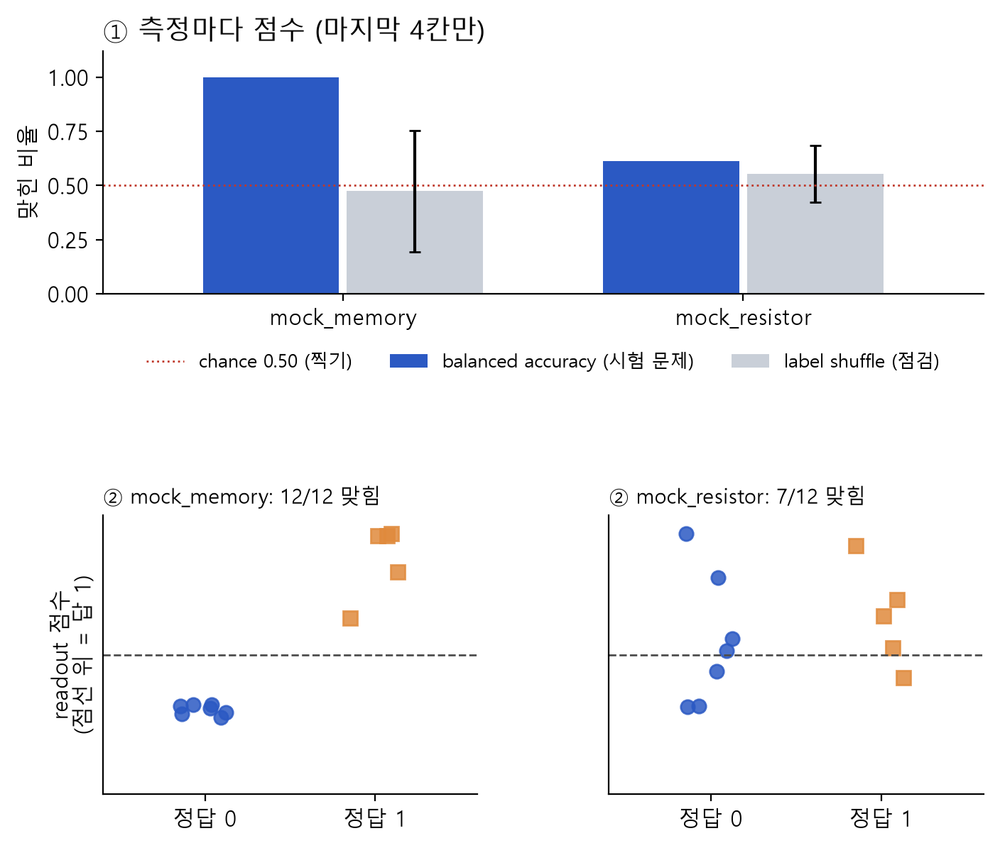
결과가 뜻하는 것.
| 열 이름 | 뜻 | mock_memory | mock_resistor |
|---|---|---|---|
| test right | 시험 12문제 중 맞힌 수 | 12 | 7 |
| balanced accuracy | class별 맞힌 비율의 평균 | 1.00 | 0.61 |
| label shuffle | 정답지를 섞고 채점 (점검) | 0.47 → 정상 | 0.56 → 정상 |
저항은 앞 pulse의 흔적이 없으니 원래 맞힐 방법이 없습니다. 그런데도 0.61이 나온 것은 시험 문제가 12개뿐이라 우연히 몇 개 더 맞힌 것입니다. 동전을 12번 던지면 앞면이 7–8번 나올 때도 있는 것과 같습니다. 그림 ②에서 저항의 점들이 점선 위아래에 섞여 있는 것이 "실제로는 못 가른다"는 모습입니다.
END_ONLY = True를 False로 바꿔 ▷(48개 숫자 전부로 채점). 저항의 점수는 어떻게 될까요? 그리고 왜 이 프로젝트는 마지막 4칸만 볼까요?
저항도 1.00이 됩니다. 48개 전부를 보면 큰 입력이 들어오던 그 순간(0–7칸)의 전류가 포함되는데, 저항도 그때는 전류가 크게 흐르므로 "큰 입력이 어디 있었나"를 바로 압니다. 이것은 기억이 아니라 지금 입력을 보고 있는 것입니다. 그래서 기억을 묻고 싶으면 입력이 똑같은 마지막 4칸만 봅니다.
PS C:\Users\내이름\Desktop\ion-projects-code> & python mylabs/p2_3_readout.py
==================================================================
readout = all 48 numbers, train 28 / test 12, chance = 0.50
==================================================================
run test right balanced label shuffle
accuracy (should be near 0.5)
--------------- ---------- -------- --------------------
mock_memory 12 / 12 1.00 0.50 +/- 0.26
mock_resistor 12 / 12 1.00 0.51 +/- 0.18
PS C:\Users\내이름\Desktop\ion-projects-code>관찰 적기 (완료 조건)
할 일 연구 노트나 메모장에 먼저 내 말로 적고, 그다음 "정답 보기"를 눌러 비교합니다.
질문. "마지막 4칸만 보면 가짜 소자 ____, 가짜 저항 ____. 그 차이가 생긴 이유는 ____."
가짜 소자 1.00, 가짜 저항 0.61(찍기 수준). 마지막 4칸의 입력은 두 class가 같지만, 가짜 소자는 앞 칸들의 흔적 때문에 전류가 조금 달라서(그림 4 ③) 그 차이로 가를 수 있었습니다. 저항은 전류가 지금 전압에만 비례해 차이가 0이라(그림 5) 가를 단서가 없습니다.
다시 한 번: mock 결과는 실제 소자에 대해 아무것도 말해 주지 않습니다. 가짜 소자의 "기억"은 설정 파일의 "tau": 0.5 한 줄로 만들어 넣은 것입니다.
실습 4. mock RC로 "기억처럼 보이는 신호" 보기 (p2_4_wrr.py)
capacitor는 바닥에 작은 구멍이 난 물통과 비슷합니다. 전기를 부으면 차고, 멈추면 구멍으로 천천히 빠집니다. 이온이 움직이지 않아도, 부품 하나만으로 "조금 전에 무슨 일이 있었다"는 흔적이 생깁니다.
나중에 내 소자에서 흔적을 보면 "이것이 capacitor의 흔적과 같은 모양인가?"를 물어야 합니다. 그러려면 capacitor의 흔적이 어떻게 생겼는지 먼저 알아야 합니다. 이 실습은 그 모양을 mock으로 눈에 익힙니다. 방법은 쓰기 → 쉬기 → 읽기입니다.
series RC: resistor R(1 MΩ)과 capacitor C를 일렬로 이은 것. 물통(C)과 구멍(R).
time constant τ (타우): 흔적이 빠지는 데 걸리는 시간의 크기. 이 mock은 τ ≈ 1초. τ만큼 지나면 흔적이 약 3분의 1, 5τ(5초)면 거의 0이 됩니다.
쓰기–쉬기–읽기 (write–rest–read): 큰 전압(쓰기, ±0.5 V 1초) → 0 V로 쉬기(gap초) → 작은 전압(읽기, 0.05 V)으로 전류 재기. 쓰기는 + 와 − 두 방향으로 해 봅니다. 물을 붓는 것과 빼는 것처럼, 방향이 반대면 흔적의 부호도 반대입니다.
할 일 mylabs에 새 파일 p2_4_wrr.py → 붙여 넣기 → Ctrl+S → ▷.
mylabs/p2_4_wrr.py
# ============================================================
# P2 실습 4 · 쓰기–쉬기–읽기: 흔적이 쉬는 동안 얼마나 남나
#
# 전체 과정:
#
# GAPS의 쉬기 시간마다, + 쓰기와 − 쓰기를 한 번씩:
#
# 0 V로 5초 기다리기 (settle: 처음 상태로 가라앉히기)
# → 쓰기: ±0.5 V를 1초 (흔적 남기기)
# → 쉬기: 0 V를 GAP초 (흔적이 사라질 시간 주기)
# → 읽기: 작은 0.05 V를 0.5초 (전류로 흔적 보기)
# ↓
# + 쓰기 뒤와 − 쓰기 뒤의 '읽기 전류'가 다르면 → 흔적이 남아 있다
# 쉬기가 길어질수록 그 차이가 줄어들면 → 흔적이 사라지는 중
# ↓
# 그래프 ① 전체 전압·전류 ② 쉬기마다 읽기 전류 (+ 쓰기 vs − 쓰기)
# ③ 흔적의 크기 vs 쉬기 시간
# ============================================================
import json
import sys
import types
from pathlib import Path
import numpy as np
import matplotlib.pyplot as plt
CODE = Path(__file__).resolve().parent.parent # ion-projects-code 폴더
sys.path.insert(0, str(CODE / "python")) # 공용 코드 폴더를 찾을 수 있게
from smu import open_smu # 장비(진짜 또는 mock)를 여는 함수
from a1_tests import Recorder, run_wrr # 쓰기–쉬기–읽기 순서 (python/a1_tests.py)
from common import atomic_save_npz
# ============================================================
# 0. 그림 설정 — 건드리지 않아도 됩니다
# ============================================================
plt.rcParams.update({
"font.family": "Malgun Gothic", "axes.unicode_minus": False, "font.size": 11,
"legend.frameon": False, "axes.spines.top": False, "axes.spines.right": False,
})
# ============================================================
# 1. 바꿔 볼 수 있는 설정값 ← 여기를 바꿔 보세요
# ============================================================
MOCK = True # True = 가짜 장비, False = 진짜 소스미터
MOCK_MODEL = "series_rc" # mock 안의 가짜 부품: "series_rc" (R과 C를 일렬로), "resistor", "memory"
GAPS = [0.1, 1, 5] # 쉬기 시간 (초)
VW, TW = 0.5, 1.0 # 쓰기 전압 (V), 쓰기 시간 (초)
VR, TR = 0.05, 0.5 # 읽기 전압 (V), 읽기 시간 (초)
NAME = "wrr_rc_mock" # 저장 이름 → runs\wrr_rc_mock.npz
COMPARE = [] # ③에 같이 그릴 예전 결과 이름들. 예: ["wrr_rc_real", "wrr_r1M"]
# --- 진짜 장비일 때만 쓰는 값 (MOCK = False) ---
ADDR = "GPIB0::24::INSTR" # NI MAX에서 찾은 장비 주소
COMPLIANCE_A = 1e-5 # 전류 제한 (A)
DEVICE_ID = "R1M_C1u_test" # 지금 잰 시료 이름
# ============================================================
# 2. 장비 설정
# ============================================================
cfg = json.loads((CODE / "python" / "config_example.json").read_text(encoding="utf-8"))
inst = cfg["instrument"]
if MOCK:
inst["mock"]["model"] = MOCK_MODEL
else:
inst.update(addr=ADDR, compliance_A=COMPLIANCE_A)
cfg["device"]["id"] = DEVICE_ID
out = CODE / "runs" / NAME
out.parent.mkdir(exist_ok=True)
if not MOCK and out.with_suffix(".npz").exists():
raise SystemExit(f"runs/{NAME}.npz가 이미 있습니다. 진짜 측정은 덮어쓰지 않도록 NAME을 바꾸세요.")
# ============================================================
# 3. 측정 (python/a1_tests.py의 run_wrr)
# ============================================================
a = types.SimpleNamespace(gaps=GAPS, vw=VW, tw=TW, vr=VR, tr=TR, settle=5.0)
with open_smu(inst, mock=MOCK) as smu:
print(f"instrument : {smu.idn}" + (f" (model: {MOCK_MODEL})" if MOCK else ""))
smu.enable()
rec = Recorder(smu) # 읽은 값을 모두 적어 두는 공책
summary = run_wrr(rec, a) # 쓰기–쉬기–읽기를 GAPS × (+, −) 번
d = rec.arrays()
atomic_save_npz(str(out) + ".npz", **d, **{"sum_" + k: v for k, v in summary.items()})
print(f"saved : runs/{NAME}.npz ({len(d['t'])} reads, {int(d['compliance'].sum())} hit compliance)")
# ============================================================
# 4. 숫자로 보기
# ============================================================
#
# I_read_first = 읽기를 시작한 직후의 전류
# I_read_late = 읽기 후반(뒤쪽 절반)의 평균 전류
# trace = (+ 쓰기 뒤 I_read_first) − (− 쓰기 뒤 I_read_first)
# 0이면 쓰기 방향을 구별할 흔적이 없다
# ============================================================
gap, pol = summary["gap"], summary["polarity"]
first, late = summary["I_read_first"] * 1e6, summary["I_read_late"] * 1e6
print()
print("rest (s) write I_read_first (uA) I_read_late (uA)")
for g, p, f, l in zip(gap, pol, first, late):
print(f"{g:>8g} {'+' if p > 0 else '-'}{VW:g} V {f:>12.3f} {l:>12.3f}")
trace = first[pol > 0] - first[pol < 0]
print()
print("rest (s) trace = (+write) - (-write) (uA)")
for g, tr in zip(gap[pol > 0], trace):
print(f"{g:>8g} {tr:+.3f}")
# ============================================================
# 5. 그래프 ① 전체 전압·전류
# ============================================================
read_k = list(d["seg_names"]).index("read")
is_read = d["seg"] == read_k
fig, ax = plt.subplots(2, 1, figsize=(8, 5.0), sharex=True)
ax[0].plot(d["t"], d["V_set"], color="#2b59c3", lw=1)
ax[0].set_ylabel("건 전압 (V)")
ax[0].set_title(f"① 전체 기록 ({'mock ' + MOCK_MODEL if MOCK else NAME}) · 빨강 = 읽기 구간", loc="left")
ax[1].plot(d["t"], d["I"] * 1e6, color="0.45", lw=1)
ax[1].plot(d["t"][is_read], d["I"][is_read] * 1e6, ".", color="#c0392b", ms=3)
ax[1].set_ylabel("전류 (µA)")
ax[1].set_xlabel("시간 (s)")
fig.tight_layout()
# ============================================================
# 6. 그래프 ② 쉬기마다 읽기 전류 ③ 흔적 vs 쉬기 시간
# ============================================================
# 읽기 구간을 하나씩 잘라 낸다 (seg 번호가 'read'인 줄이 이어지는 덩어리)
starts = np.where(is_read & ~np.r_[False, is_read[:-1]])[0]
pieces = []
for s in starts:
e = s
while e + 1 < len(is_read) and is_read[e + 1]:
e += 1
pieces.append((d["t"][s:e + 1] - d["t"][s], d["I"][s:e + 1] * 1e6))
n = len(GAPS)
fig2 = plt.figure(figsize=(8, 6.4))
gs = fig2.add_gridspec(2, n, height_ratios=[1, 1.1], hspace=0.75, wspace=0.2)
ylo = min(p[1].min() for p in pieces)
yhi = max(p[1].max() for p in pieces)
pad = 0.1 * (yhi - ylo + 1e-12)
for j, g in enumerate(GAPS):
axj = fig2.add_subplot(gs[0, j])
tp, ip = pieces[2 * j] # + 쓰기 뒤 (run_wrr 순서: 쉬기마다 +, −)
tm, im = pieces[2 * j + 1] # − 쓰기 뒤
axj.plot(tp, ip, "-", color="#2b59c3", lw=2, label=f"+{VW:g} V 쓰기 뒤")
axj.plot(tm, im, "--", color="#e08a3c", lw=2, label=f"-{VW:g} V 쓰기 뒤")
axj.axhline(0, color="0.8", lw=0.8)
axj.set_ylim(ylo - pad, yhi + pad)
axj.set_title(f"쉬기 {g:g} s", loc="left", fontsize=10.5)
axj.set_xticks([0, TR / 2], ["0", f"{TR / 2:g}"])
axj.set_xlabel("읽기 시작 뒤 (s)", fontsize=9.5)
if j == 0:
axj.set_ylabel("읽기 전류 (µA)")
else:
axj.set_yticklabels([])
fig2.text(0.02, 0.975, "② 쉬기 시간마다 읽기 전류: 두 선이 갈라져 있으면 흔적이 남은 것", fontsize=11.5, va="top")
ax3 = fig2.add_subplot(gs[1, :])
ax3.axhline(0, color="0.75", lw=1)
ax3.plot(gap[pol > 0], trace, "o-", color="#2b59c3", lw=2, ms=7, label=NAME)
colors = ["#e08a3c", "#2f9e6e", "#8e5bc4", "#7a7f87"]
for c, other in zip(colors, COMPARE):
p = CODE / "runs" / f"{other}.npz"
if not p.exists():
print(f"(COMPARE: runs/{other}.npz가 없어 건너뜀)")
continue
with np.load(p) as o:
og, op, of = o["sum_gap"], o["sum_polarity"], o["sum_I_read_first"] * 1e6
ax3.plot(og[op > 0], of[op > 0] - of[op < 0], "s--", color=c, lw=1.6, ms=6, label=other)
ax3.set_xscale("log")
ax3.set_xticks(GAPS, [f"{g:g}" for g in GAPS])
ax3.minorticks_off()
ax3.set_xlabel("쉬기 시간 (s, 로그 눈금)")
ax3.set_ylabel("흔적 (µA)\n(+쓰기) - (-쓰기)")
ax3.set_title("③ 흔적의 크기: 0에 가까워지면 흔적이 사라진 것", loc="left")
fig2.subplots_adjust(left=0.13, right=0.98, top=0.88, bottom=0.2)
h1, l1 = fig2.axes[0].get_legend_handles_labels()
h3, l3 = ax3.get_legend_handles_labels()
fig2.legend(h1 + h3, l1 + l3, loc="lower center", ncol=4, fontsize=9.5)
plt.show() # 그림 창 두 개를 모두 닫으면 프로그램이 끝납니다.코드에서 볼 곳.
- 3번 상자: 측정 순서는 공용 코드
a1_tests.py의run_wrr이 정합니다. 진짜 소자를 잴 때(P2.1)도 같은 함수입니다. - 4번 상자
trace: (+ 쓰기 뒤 읽기 전류) − (− 쓰기 뒤 읽기 전류). 0이면 흔적 없음입니다. - 1번 상자
COMPARE: 예전에 저장한 결과 이름을 넣으면 그림 ③에 같이 그립니다. 진짜 RC·소자와 나란히 놓을 때 씁니다.
▷ 실행하면:
PS C:\Users\내이름\Desktop\ion-projects-code> & python mylabs/p2_4_wrr.py
instrument : MOCK SMU (model: series_rc)
saved : runs/wrr_rc_mock.npz (2560 reads, 0 hit compliance)
rest (s) write I_read_first (uA) I_read_late (uA)
0.1 +0.5 V -0.227 -0.040
0.1 -0.5 V 0.318 0.056
1 +0.5 V 0.042 0.007
1 -0.5 V 0.048 0.009
5 +0.5 V 0.045 0.008
5 -0.5 V 0.045 0.008
rest (s) trace = (+write) - (-write) (uA)
0.1 -0.545
1 -0.006
5 +0.000
PS C:\Users\내이름\Desktop\ion-projects-code>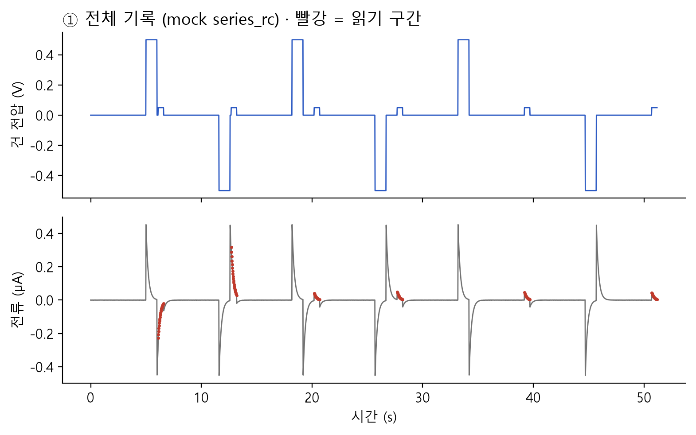
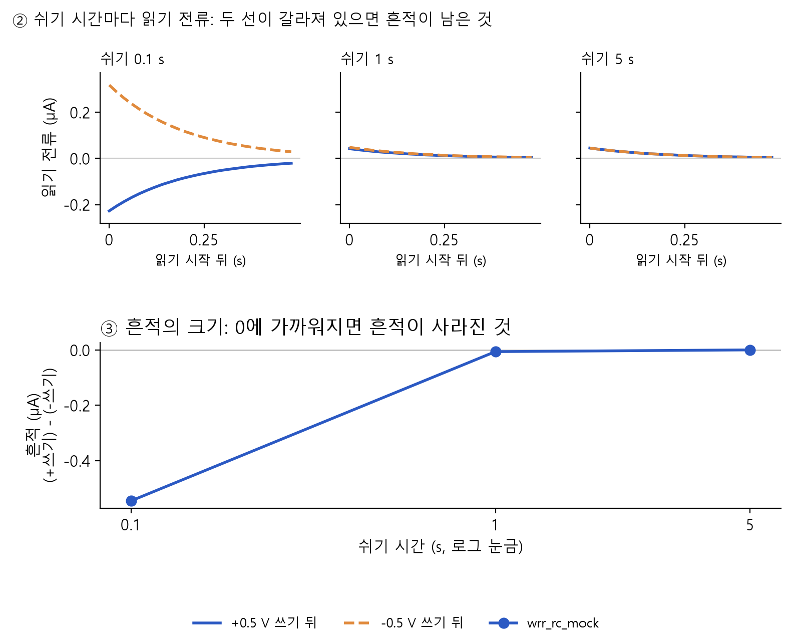
결과가 뜻하는 것. 쉬기 0.1초에서는 + 쓰기 뒤 −0.23 µA, − 쓰기 뒤 +0.32 µA로 부호까지 반대입니다. 쉬기 1초면 차이가 0.006 µA로 거의 사라지고, 5초면 완전히 같습니다. 5초에서 남는 +0.045 µA는 읽기 전압(0.05 V)이 물통을 새로 채우며 흐르는 전류라 쓰기와 상관없습니다.
관찰 적기
할 일 먼저 적고 "정답 보기"로 비교합니다.
질문. "쉬기가 ____초면 + 쓰기와 − 쓰기의 읽기 전류가 다르고, ____초면 같아진다. 그 이유는 ____."
0.1초면 다르고(−0.23 vs +0.32 µA), 5초면 같아진다(둘 다 +0.045 µA). 쓰기가 capacitor에 남긴 전기가 쉬는 동안 τ ≈ 1초의 속도로 빠지기 때문입니다. 0.1초는 τ보다 훨씬 짧아 대부분 남아 있고, 5초는 τ의 5배라 거의 다 빠졌습니다.
관찰할 점. capacitor만으로도 '쓰기 방향을 기억하는 것처럼' 보이는 결과가 나옵니다. 이온이 아니라 전기가 찼다가 빠지는 것만으로도 이런 모양이 나옵니다. 이 모양을 알아 두면 P2.1에서 "내 소자는 RC와 같은 모양인가, 다른 모양인가"를 물을 수 있습니다.
다음 단계 조건. 실습 4까지 ▷ 실행해 결과 그림을 확인했으면 P2.0은 끝입니다(관찰 질문 글로 적기는 선택). 소스미터가 있으면 P2.0R로, 없으면 여기서 멈추고 장비가 생기면 돌아옵니다.
P2.0R. 실제 소스미터로 저항과 RC (1–2시간)
새 체중계를 받으면 먼저 무게를 아는 물건(2 L 생수 = 2 kg)을 올려 봅니다. 2 kg이 나오면 체중계를 믿고, 3 kg이 나오면 체중계나 놓은 자리를 의심합니다. P2.0R이 이것입니다. 소자 대신 답을 미리 아는 부품(1 MΩ resistor, RC)을 SMU에 물립니다.
| 단계 | 하는 일 | 결과로 보는 것 |
|---|---|---|
| PC와 장비 잇기 | 케이블·NI-VISA·장비 주소 | NI MAX에 장비 이름이 보임 |
| 실습 5 | 첫 대화 + 옴의 법칙 | 전류 = 전압 ÷ 1 MΩ인지, 실제 pulse 길이 |
실습 2 다시 (MOCK = False) |
resistor에 pulse 48개 | 전류가 전압 계단과 같은 모양 |
실습 4 다시 (MOCK = False) |
진짜 RC 쓰기–쉬기–읽기 | mock RC와 같은 모양인지 |
- 준비물: 소스미터(이 코드는 Keithley 2400 계열 기준), 연결 케이블(GPIB–USB 어댑터 등), 바나나 플러그–악어 클립 선 2개(빨강·검정), 짧은 악어 클립 선 1개, 1 MΩ resistor, 1 µF 필름 capacitor.
- 실물 미검증: 이 단계부터 진짜 장비로 돌려 보지 못했습니다. 페이지의 그림은 mock으로 돌린 결과이고, 진짜 장비에서의 차이는 [실물 미검증] 꼬리표로 적었습니다. NI-VISA·NI MAX의 메뉴 이름은 영어 화면 기준입니다.
P2.0R-1. PC와 소스미터 잇기
PC와 소스미터는 처음 만난 두 사람과 같습니다. 이어 줄 선(케이블), 통역해 줄 프로그램(NI-VISA), 서로 부를 이름(장비 주소)이 필요합니다.
연결 방식 확인 (5분)
할 일 소스미터 뒷면의 연결 단자 이름을 보고 아래 표에서 내 경우를 고릅니다. GPIB–USB 어댑터는 연구실에 남는 것이 있는지 먼저 물어봅니다.
| 뒷면 단자 | PC와 잇는 법 | 설치할 것 |
|---|---|---|
| GPIB(넓적한 24핀) | GPIB–USB 어댑터(예: NI GPIB-USB-HS) | NI-VISA + 어댑터 드라이버(NI 제품이면 NI-488.2) 미확인 |
| RS-232(9핀) | USB–RS-232 변환 케이블 | NI-VISA (주소는 ASRL3::INSTR처럼 나옴) |
| USB(2450 등 신형) | USB 케이블 | NI-VISA. 단, 이 코드는 2400 계열만 지원 |
NI-VISA 설치 (20–40분, 재부팅 1번)
NI-VISA · NI MAX: PC가 측정 장비와 대화하게 해 주는 무료 소프트웨어(NI-VISA, 통역사)와, 연결된 장비의 주소를 보여 주는 프로그램(NI MAX). 둘이 같이 설치됩니다. Python의 pyvisa는 통역 창구일 뿐이라 NI-VISA가 따로 있어야 합니다.
할 일
ni.com에서NI-VISA download를 검색해 Windows용 최신 판을 내려받습니다(NI 계정 로그인은 직접 합니다).- 설치 파일을 실행 → NI-VISA와 NI Measurement & Automation Explorer(NI MAX)에 체크 → Next. 사용권 동의는 직접 읽고 동의합니다.
- 끝나면 Reboot Now. GPIB–USB 어댑터를 쓰면 어댑터 드라이버(NI는 NI-488.2)도 같은 방법으로 설치합니다 [미확인 — 어댑터 설명서 확인].
NI MAX에서 장비 주소 찾기 (10분)
할 일
- 케이블을 꽂고 소스미터 전원을 켭니다. 자체 점검이 끝날 때까지 기다립니다.
- Windows 키 →
NI MAX→ 왼쪽 My System → Devices and Interfaces를 펼칩니다. - GPIB이면
GPIB0 (…)줄 → 위쪽 Scan for Instruments. 생긴 장비 줄을 누르면 오른쪽 VISA Resource Name에 주소(예:GPIB0::24::INSTR)가 나옵니다. 메모장에 그대로 적습니다. - (확인) Communicate with Instrument →
*IDN?→ Query →KEITHLEY INSTRUMENTS INC.,MODEL 2400,…이 나오면 대화가 되는 것입니다.
장비 주소 (addr): PC가 장비를 부를 때 쓰는 이름. GPIB0::24::INSTR = "GPIB 어댑터 0번에 붙은 24번 장비". 아파트 동·호수와 같습니다.
*IDN?: 장비에게 "너는 누구니?"라고 묻는 표준 질문.
- 장비가 안 보임 → 케이블·전원 확인 → 소스미터 앞면 MENU → COMMUNICATION에서 통신 방식과 GPIB 주소(2400 공장 값 24) 확인 [미확인 — 설명서 확인].
- 왼쪽 나무에
GPIB0자체가 없음 → 어댑터 드라이버가 없거나 재부팅을 안 한 것. - RS-232이면 장비 앞면의 baud rate(통신 속도)와 NI MAX 설정이 같아야 합니다.
지원하는 장비. smu.py(장비와 대화하는 공용 코드)는 Keithley 2400 계열 기준입니다. 2450·2600 시리즈는 명령이 달라 이 코드로는 아직 잴 수 없습니다 (맨 아래 AI에게 묻는 법).
이 코드가 장비를 안전하게 다루는 법.
| 하는 일 | 쉬운 말로 |
|---|---|
연결만으로는 출력이 켜지지 않고 smu.enable()을 불러야 켜짐 |
설정을 다 마친 뒤에야 전압을 걸기 시작함 |
with 문이 끝나거나 오류·Ctrl+C가 나면 0 V → 출력 OFF를 시도, 실패하면 화면에 알림 |
끝나거나 멈추면 스스로 끔. 못 끄면 알려 줌 |
1.0 V(설정 파일의 v_limit_V)보다 큰 전압 요청은 거부 |
오타 한 번으로 큰 전압이 걸리지 않게 |
| 읽을 때마다 전류 제한(compliance)에 걸렸는지 기록 | 울타리에 닿았는지 매번 적어 둠 |
USB·GPIB 연결이 끊기면 PC는 장비를 끌 수 없습니다. 장비 앞면 OUTPUT 버튼 위치를 알아 두고, 이상하면 직접 끕니다. compliance 상태 bit 번호도 2400 설명서의 상태 워드 표에서 한 번 확인하세요(코드에 표시해 둠, 실물 검증 대기).
실습 5. 첫 대화와 옴의 법칙: 1 MΩ resistor (p2_5_ohm.py)
이 실습이 체중계 위의 생수병입니다. resistor는 전류 = 전압 ÷ 저항을 따르므로 답을 미리 압니다. 0.5 V면 0.5 ÷ 1,000,000 A = 0.5 µA. 전압을 0–0.5 V로 바꿔 가며 재서, 점들이 이 예상 선 위에 오면 장비·케이블·설정을 믿고 다음으로 갑니다.
같이 보는 것이 하나 더 있습니다. "50 ms 동안 걸어라"가 실제로 몇 ms였나입니다. PC는 전류를 읽은 순간에만 시각을 알 수 있어서, 마지막 읽기가 50 ms를 넘긴 시각에 pulse가 끝납니다.
compliance (전류 제한): "전류가 이 값을 넘지 않게 하라"는 장비 설정. 넘으려 하면 장비가 스스로 전압을 낮춥니다. 소자를 태우지 않게 지키는 울타리입니다. 프로그램을 멈추지는 않으므로 걸렸는지는 기록(compliance 열)으로 압니다. 1e-5 = 1 ÷ 100,000 A = 10 µA.
HI · LO: 소스미터 앞면의 두 단자(보통 빨강·검정). 건전지의 +극·−극과 같습니다.
할 일 먼저 mock으로: mylabs에 새 파일 p2_5_ohm.py → 붙여 넣기 → Ctrl+S → ▷.
mylabs/p2_5_ohm.py
# ============================================================
# P2 실습 5 · 진짜 소스미터와 첫 대화: 1 MΩ resistor로 옴의 법칙 확인
#
# 전체 과정:
#
# (MOCK = False일 때) PC에 연결된 장비 주소 목록 보기 (NI-VISA)
# ↓
# 장비 열기 → "너는 누구니?" (*IDN?) 답 보기
# ↓
# 전압을 0, 0.1, … 0.5 V로 하나씩 HOLD_MS 동안 걸고, 끝 전류 읽기
# ↓
# 답을 아는 부품(1 MΩ)이므로 전류 = 전압 ÷ 1,000,000 이어야 한다
# 맞으면 장비·케이블·설정을 믿고 다음 단계로
# ↓
# 그래프 ① 전압–전류 (재 본 점 vs 예상 선)
# ② 전압 하나를 걸 때 PC가 전류를 읽은 시각 (실제 pulse 길이)
# ============================================================
import json
import sys
from pathlib import Path
import numpy as np
import matplotlib.pyplot as plt
CODE = Path(__file__).resolve().parent.parent # ion-projects-code 폴더
sys.path.insert(0, str(CODE / "python")) # 공용 코드 폴더를 찾을 수 있게
from smu import open_smu # 장비(진짜 또는 mock)를 여는 함수
# ============================================================
# 0. 그림 설정 — 건드리지 않아도 됩니다
# ============================================================
plt.rcParams.update({
"font.family": "Malgun Gothic", "axes.unicode_minus": False, "font.size": 11,
"legend.frameon": False, "axes.spines.top": False, "axes.spines.right": False,
})
# ============================================================
# 1. 바꿔 볼 수 있는 설정값 ← 여기를 바꿔 보세요
# ============================================================
MOCK = True # True = 가짜 장비 (안의 부품은 resistor), False = 진짜 소스미터
ADDR = "GPIB0::24::INSTR" # NI MAX에서 찾은 장비 주소 (MOCK = False일 때)
COMPLIANCE_A = 1e-5 # 전류 제한 10 µA (1 MΩ에 1 V여도 1 µA라 충분한 여유)
R_OHM = 1e6 # 물린 resistor 값 (Ω). 1 MΩ = 1,000,000 Ω
VOLTS = [0, 0.1, 0.2, 0.3, 0.4, 0.5] # 걸어 볼 전압 (V)
HOLD_MS = 50 # 전압 하나를 걸고 있는 시간 (ms). P2의 pulse 길이와 같게
# ============================================================
# 2. (진짜 장비일 때) PC가 보는 장비 주소 목록
# ============================================================
if not MOCK:
import pyvisa
print("VISA resources :", pyvisa.ResourceManager().list_resources())
# 예: ('ASRL1::INSTR', 'GPIB0::24::INSTR') → 'GPIB0::…'가 소스미터. ASRL1은 PC의 직렬 단자
cfg = json.loads((CODE / "python" / "config_example.json").read_text(encoding="utf-8"))
inst = cfg["instrument"]
inst.update(addr=ADDR, compliance_A=COMPLIANCE_A)
inst["mock"].update(model="resistor", R=R_OHM) # mock일 때 안에 넣을 가짜 부품
# ============================================================
# 3. 전압을 하나씩 걸고 끝 전류 읽기
# ============================================================
#
# smu.hold(v, 초): 전압 v를 걸고, 시간이 다 될 때까지 전류를 계속 읽는다.
# 돌려받는 것: 읽을 때마다 {시각, 전압, 전류, compliance 걸림?}의 목록.
# ============================================================
rows, first_hold = [], None
with open_smu(inst, mock=MOCK) as smu: # with 문이 끝나면 0 V → 출력 OFF (자동)
print(f"instrument : {smu.idn}")
smu.enable() # 이때부터 전압이 걸린다
for v in VOLTS:
recs = smu.hold(v, HOLD_MS / 1000)
rows.append((v, recs[-1]["I"], any(r["compliance"] for r in recs)))
if first_hold is None and v > 0:
first_hold = recs # 그래프 ②에 쓸, 0이 아닌 첫 전압의 읽기 기록
V = np.array([r[0] for r in rows])
I = np.array([r[1] for r in rows])
# ============================================================
# 4. 숫자로 확인: 잰 전류 vs 예상 전류 (= 전압 ÷ R)
# ============================================================
print()
print("V set (V) I measured (uA) I expected V/R (uA) compliance")
for v, i, c in rows:
print(f"{v:>9.2f} {i * 1e6:>15.3f} {v / R_OHM * 1e6:>19.3f} {'HIT' if c else '-':>10}")
slope = np.polyfit(V, I, 1)[0] # 전류–전압 직선의 기울기 = 1/R
print(f"\nR from slope : {1 / slope / 1e6:.3f} MOhm (expected {R_OHM / 1e6:g} MOhm)")
t_set = first_hold[0]["t_set"]
t_reads = np.array([r["t_host"] for r in first_hold]) - t_set
print(f"reads in one {HOLD_MS} ms hold : {len(t_reads)} at {np.round(t_reads * 1000).astype(int).tolist()} ms")
print(f"actual hold : {t_reads[-1] * 1000:.0f} ms (set {HOLD_MS} ms)")
# ============================================================
# 5. 그래프 ① 전압–전류 ② 전류를 읽은 시각
# ============================================================
fig, (ax1, ax2) = plt.subplots(1, 2, figsize=(8, 3.9), gridspec_kw={"width_ratios": [1.15, 1]})
vv = np.linspace(0, max(VOLTS), 50)
ax1.plot(vv, vv / R_OHM * 1e6, "-", color="0.65", lw=2, label=f"예상: V ÷ {R_OHM / 1e6:g} MΩ")
ax1.plot(V, I * 1e6, "o", color="#2b59c3", ms=8, label="재 본 값")
ax1.set_xlabel("건 전압 (V)")
ax1.set_ylabel("전류 (µA)")
ax1.set_title("① 전압–전류: 점이 회색 선 위에", loc="left")
ax2.axvspan(0, HOLD_MS, color="#eef3fb", zorder=0)
ax2.axvline(HOLD_MS, color="#e08a3c", lw=1.5, ls="--")
ax2.plot(t_reads * 1000, np.zeros_like(t_reads), "o", color="#c0392b", ms=9)
ax2.set_xlim(-5, max(HOLD_MS, t_reads[-1] * 1000) * 1.3)
ax2.set_ylim(-1, 1)
ax2.set_yticks([])
ax2.spines["left"].set_visible(False)
ax2.set_xlabel("전압을 건 뒤 시간 (ms)")
ax2.set_title(f"② 읽은 시각 {len(t_reads)}번 → 실제 {t_reads[-1] * 1000:.0f} ms", loc="left")
fig.tight_layout(rect=(0, 0.1, 1, 1))
h, l = ax1.get_legend_handles_labels()
h2 = [plt.Line2D([], [], color="#c0392b", marker="o", ls="none"),
plt.Line2D([], [], color="#e08a3c", ls="--")]
fig.legend(h + h2, l + ["전류를 읽은 순간", f"설정 길이 {HOLD_MS} ms"], loc="lower center", ncol=4, fontsize=9.5)
plt.show() # 그림 창을 닫으면 프로그램이 끝납니다.▷ 실행하면 (mock):
PS C:\Users\내이름\Desktop\ion-projects-code> & python mylabs/p2_5_ohm.py
instrument : MOCK SMU
V set (V) I measured (uA) I expected V/R (uA) compliance
0.00 0.000 0.000 -
0.10 0.100 0.100 -
0.20 0.200 0.200 -
0.30 0.300 0.300 -
0.40 0.400 0.400 -
0.50 0.500 0.500 -
R from slope : 1.001 MOhm (expected 1 MOhm)
reads in one 50 ms hold : 3 at [20, 40, 60] ms
actual hold : 60 ms (set 50 ms)
PS C:\Users\내이름\Desktop\ion-projects-code>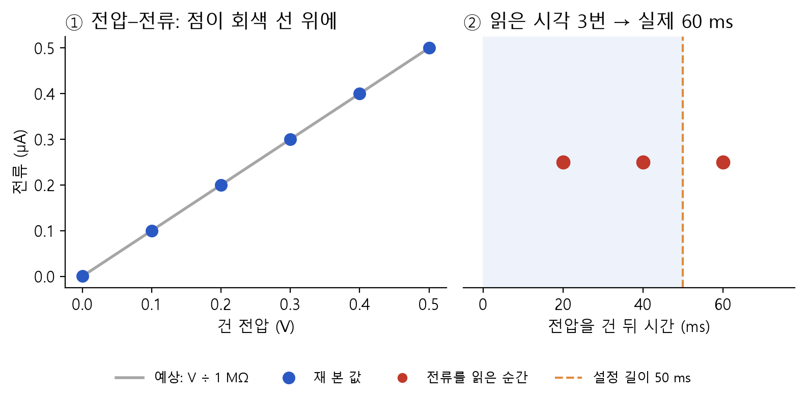
결과가 뜻하는 것. mock은 resistor를 수식으로 흉내 내니 1.001 MΩ로 거의 정확합니다. 그림 ②가 "실제 pulse 길이 = 설정 + 읽기 간격의 여유"를 보여 줍니다. 진짜 장비에서는 읽기 간격이 "PC ↔︎ 장비 대화 시간 + 측정 시간(NPLC)"이라 더 길고 고르지 않을 수 있습니다.
resistor 연결 (5분)
| 소스미터 앞면 단자 | 선 | 닿는 곳 |
|---|---|---|
| HI (빨강) | 빨간 바나나–악어 클립 선 | 1 MΩ resistor 한쪽 다리 |
| LO (검정) | 검은 바나나–악어 클립 선 | resistor 다른 쪽 다리 |
할 일 OUTPUT 표시등이 꺼져 있는지 확인 → 플러그를 끝까지 꽂기 → 클립을 resistor에 물고 두 클립이 서로 닿지 않게 떼어 놓기 → 화면에 REAR가 있으면 앞면 FRONT/REAR 단추로 앞면 단자 선택 미확인. OUTPUT 단추는 누르지 않습니다. 프로그램이 켜고 끕니다.
같은 파일을 진짜 장비로 (약 10초)
할 일 p2_5_ohm.py 맨 위 두 줄을 고치고 Ctrl+S → ▷. 이제 진짜 전압이 걸립니다.
MOCK = False
ADDR = "GPIB0::24::INSTR" # NI MAX에서 적어 둔 내 장비 주소로VISA resources : ('ASRL1::INSTR', 'GPIB0::24::INSTR')
instrument : KEITHLEY INSTRUMENTS INC.,MODEL 2400,(일련번호),(펌웨어 판)
V set (V) I measured (uA) I expected V/R (uA) compliance
0.00 0.0xx 0.000 -
0.10 0.1xx 0.100 -
...
R from slope : 0.9xx–1.0xx MOhm (expected 1 MOhm)
reads in one 50 ms hold : (장비에 따라)
actual hold : (50 ms보다 긴 값) ms (set 50 ms)- 예상 [실물 미검증]:
R from slope가 1 MΩ ± 몇 %(resistor 허용 오차 1–5%).actual hold는 50 ms보다 수십 ms 길 수 있습니다. 이 값을 연구 노트에 적습니다. 모든 결과에는 설정값이 아니라 실제 길이를 같이 적습니다.
ValueError: Could not locate a VISA implementation→ NI-VISA가 없거나 재부팅을 안 한 것.VISA resources : ()→ NI-VISA는 있지만 장비가 안 보임. NI MAX 카드의 '다르면'으로.2400 계열이 아닙니다→ 모델이 다름(위 '지원하는 장비').- compliance 열에
HIT→ 전류 제한에 걸림. resistor에서 나오면 클립끼리 닿은(합선) 것일 수 있습니다. - 전류가 0 → 연결. 시간 초과(
VI_ERROR_TMO) → 주소·케이블. 멈추고 싶으면 Ctrl+C(0 V → OFF 시도). 표시등이 켜져 있으면 앞면 OUTPUT으로 직접 끕니다.
resistor에 pulse 48개: 실습 2를 진짜 장비로 (약 30초)
할 일 p2_2_measure.py 맨 위를 이렇게 고치고 Ctrl+S → ▷. 3 trial만 먼저 잽니다.
MOCK = False
ADDR = "GPIB0::24::INSTR" # 내 장비 주소
RUN_NAME = "r1M" # 결과 폴더 runs\r1M
LIMIT = 3 # 3 trial만trial 하나에 약 5–7초(쉬기 2초 + pulse 48개)라 약 20–40초입니다. OUTPUT 표시등이 켜졌다가, 끝나면 꺼집니다.
- 예상 [실물 미검증]: 그림 ①의 전류가 위 칸의 전압 계단과 같은 모양이고(튀었다 줄어드는 모양 없음), 크기는 전압 ÷ 1 MΩ입니다. 그림 ②·③은 mock resistor의 그림 5처럼 마지막 4칸에서 두 선이 겹칩니다. 3 trial만 쟀으니 평균은 trial 몇 개뿐입니다.
- 같은 폴더 이름으로
LIMIT = None으로 다시 ▷ 하면resume: 3/40 trials already done이 나오고 나머지를 이어서 잽니다.
instrument : MOCK SMU→MOCK = False로 안 바꿨거나 저장(Ctrl+S)을 안 한 것.기존 측정(runs/r1M)과 조건이 다릅니다→ 설정을 바꾼 뒤 같은 폴더로 이어 하려 한 것. 섞이지 않게 하는 의도된 동작입니다.RUN_NAME을 새로 짓습니다.! trial 0: N reads hit compliance→ 전류 제한에 걸린 읽기가 N개.
P2.0R-3. series RC 실측: 실습 4를 진짜 부품으로
실습 4에서 mock으로 본 "구멍 난 물통"을 진짜 부품으로 봅니다. 숫자가 mock과 비슷하면 장비가 짧은 시간의 흔적도 제대로 잡는다는 뜻이고, 이 결과가 나중에 내 소자와 비교할 기준이 됩니다.
resistor와 capacitor를 일렬로 (5분)
| 어디에서 | 선 | 어디로 |
|---|---|---|
| 소스미터 HI (빨강) | 빨간 클립 선 | 1 MΩ resistor 한쪽 다리 |
| resistor 다른 쪽 다리 | 짧은 클립 선 | 1 µF 필름 capacitor 한쪽 다리 |
| capacitor 다른 쪽 다리 | 검은 클립 선 | 소스미터 LO (검정) |
OUTPUT 꺼짐 확인 → LO 클립만 resistor에서 떼어 → 짧은 선으로 resistor와 capacitor 잇기 → LO 클립을 capacitor 다른 쪽에. τ = 1 MΩ × 1 µF = 1초. 전해 capacitor(다리 길이가 다르고 몸통에 − 줄)는 쓰지 않습니다. − 쓰기 때 거꾸로 전압이 걸립니다.
실습 4를 진짜 장비로 (약 1분)
할 일 p2_4_wrr.py 맨 위를 이렇게 고치고 Ctrl+S → ▷. COMPARE에 mock 결과를 넣으면 그림 ③에 둘이 나란히 그려집니다.
MOCK = False
NAME = "wrr_rc_real" # 결과 runs\wrr_rc_real.npz
COMPARE = ["wrr_rc_mock"] # 실습 4의 mock 결과와 겹쳐 그리기
ADDR = "GPIB0::24::INSTR"0 V로 5초 기다리기가 여섯 번이라 약 1분 걸립니다.
- 예상 [실물 미검증]: mock RC(쉬기 0.1초에서 + 쓰기 뒤 약 −0.23 µA, − 쓰기 뒤 약 +0.32 µA, 5초에서 둘 다 약 +0.045 µA)와 부호·크기 순서가 비슷합니다. 부품 허용 오차(resistor 1%, capacitor 5–10%)와 실제 pulse 길이 때문에 숫자는 조금 다릅니다.
runs/wrr_rc_real.npz가 이미 있습니다→ 진짜 측정은 덮어쓰지 않게 막아 둠.NAME을 바꿉니다.- 전류가 resistor만 있을 때와 같음 → capacitor 연결. 부호가 반대 → HI·LO 방향.
다음 단계 조건. resistor에서 전류 = 전압 ÷ 1 MΩ이 맞고, RC에서 쉬기가 길수록 + / − 쓰기의 읽기 전류가 같아지는 것을 봤으면 P2.1로 갑니다.
P2.1. 소자 특성 측정
처음 만든 소자는 사용 설명서가 없는 기계입니다. 몇 V까지 걸어도 괜찮은지, 전류가 얼마나 흐르는지, 흔적이 몇 초 남는지 아무도 모릅니다. P2.1은 그 설명서를 직접 쓰는 단계이고, 결과물은 특성표 한 장입니다.
| 단계 | 실습 파일 | 하는 일 | 결과로 보는 것 |
|---|---|---|---|
| 쓸 전압 범위 | 실습 6 p2_6_iv.py |
작은 전압부터 I–V sweep | 망가지지 않는 전압 범위 |
| sweep 속도 | 실습 6 (DWELL만 바꿈) | 같은 sweep을 빠르게·느리게 | 고리(hysteresis)가 속도에 따라 바뀌나 |
| 쓰기–쉬기–읽기 | 실습 4 p2_4_wrr.py |
쉬기 0.1–10초 | 흔적이 사라지는 시간, RC와 같은 모양인가 |
| paired-pulse | 실습 7 p2_7_ppf.py |
같은 pulse 두 번, 간격을 바꿔 | 두 번째 전류가 달라지는 간격 |
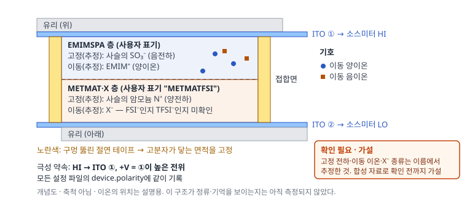
ITO: 유리 위에 입힌 투명한 전극(전기가 통하는 얇은 막). 소자의 위·아래 전극입니다.
active area (활성 면적): 고분자가 실제로 두 전극 사이에 끼어 전류가 지나가는 넓이. 넓이가 2배면 전류도 대략 2배라, 소자끼리 비교하려면 같이 적어야 합니다.
control device (비교용 소자): 두 층 대신 한 층만 넣은 소자(ITO/EMIMSPA/ITO, ITO/METMAT·X/ITO). 두 층 소자에서만 흔적이 보이면 흔적이 접합에서 생긴다고 좁힐 수 있습니다. 둘 다 보이면 접합 때문이라고 말할 수 없습니다.
- 사용자 표기 "METMATFSI"의 이동 음이온이 FSI⁻인지 TFSI⁻인지는 아직 확인하지 않았습니다. 이 사이트는 확인 전까지 X⁻로 씁니다.
- 각 층의 고정 전하 부호(EMIMSPA = 고정 SO₃⁻ / 이동 EMIM⁺, METMAT·X = 고정 암모늄 N⁺ / 이동 X⁻)는 이름에서 추정한 것입니다.
소자를 만들 때 기록할 것. active area는 구멍 뚫은 절연 테이프로 고정합니다(그림 10의 노란 부분). 극성 약속은 HI → ITO ①(EMIMSPA 쪽), LO → ITO ②. 조건별 소자 3개 이상, 두께·active area·가교제 비율·광경화·rinsing·건조 조건·온도·습도·제작 후 경과 시간을 적습니다.
소자 배선. resistor 자리에 소자를 넣는 것과 같습니다. HI(빨강) → ITO ①의 드러난 끝, LO(검정) → ITO ②의 드러난 끝. OUTPUT 꺼짐 확인 → 클립 연결(유리를 세게 물지 않게, 두 클립이 서로·반대쪽 ITO에 닿지 않게) → 실습 파일 맨 위 DEVICE_ID를 소자 이름으로 → ▷. 끝나면 OUTPUT 꺼짐을 확인하고 클립을 풉니다.
이 절의 진짜 장비 결과는 모두 [실물 미검증]입니다. 페이지의 그림은 같은 파일을 mock으로 돌린 것입니다.
P2.1-1. 실습 6. 쓸 전압 범위 찾기: I–V sweep (p2_6_iv.py)
처음 타 보는 자전거는 평지에서 브레이크를 조금씩 세게 잡아 보며 어디까지 듣는지 봅니다. 소자도 작은 전압부터 한 단계씩 넓히고, 넓힐 때마다 처음의 작은 범위로 돌아가 소자가 변하지 않았는지 확인합니다. 망가지지 않는 범위가 내 소자의 "쓸 전압 범위"입니다.
I–V sweep은 전압을 조금씩 바꾸며 그때마다 전류를 재서 전압–전류 그래프 한 장을 얻는 것입니다. 올라갈 때와 내려올 때 선이 겹치는지도 같이 봅니다.
I–V sweep: 전압을 0 → +최대 → 0 → −최대 → 0 순서로 조금씩 바꾸며 전류를 재는 것. resistor라면 원점을 지나는 곧은 선 하나가 나옵니다.
dwell: 전압 한 단계에 머무는 시간. 예: 0.05초.
hysteresis (고리): 전압을 올릴 때의 선과 내릴 때의 선이 겹치지 않고 고리를 만드는 것. 느리게 따라오는 무언가가 있다는 신호입니다.
할 일 mylabs에 새 파일 p2_6_iv.py → 붙여 넣기 → Ctrl+S → ▷ (mock으로 먼저).
mylabs/p2_6_iv.py
# ============================================================
# P2 실습 6 · I–V sweep: 전압을 조금씩 바꾸며 전류 재기
#
# 전체 과정:
#
# 전압을 0 → +VMAX → 0 → −VMAX → 0 으로 STEP씩 바꾼다
# 한 단계에 DWELL초 머물고, 단계 끝의 전류를 읽는다
# ↓
# 그래프 ① 전압–전류 (올라갈 때 / 내려올 때 색을 달리)
# ② 시간에 따른 전류
# ↓
# 두 선이 겹치면 → 지금 전압만 따르는 소자 (resistor처럼)
# 두 선이 벌어져 고리(hysteresis)가 되면 → 느리게 따라오는 무언가가 있다
#
# 진짜 소자에서는 VMAX를 0.2 V부터 시작해 조금씩 넓히고,
# 넓힐 때마다 0.2 V를 다시 재서 COMPARE로 겹쳐 본다 (소자가 변했나?).
# ============================================================
import json
import sys
import types
from pathlib import Path
import numpy as np
import matplotlib.pyplot as plt
CODE = Path(__file__).resolve().parent.parent # ion-projects-code 폴더
sys.path.insert(0, str(CODE / "python")) # 공용 코드 폴더를 찾을 수 있게
from smu import open_smu # 장비(진짜 또는 mock)를 여는 함수
from a1_tests import Recorder, run_iv # I–V sweep 순서 (python/a1_tests.py)
from common import atomic_save_npz
# ============================================================
# 0. 그림 설정 — 건드리지 않아도 됩니다
# ============================================================
plt.rcParams.update({
"font.family": "Malgun Gothic", "axes.unicode_minus": False, "font.size": 11,
"legend.frameon": False, "axes.spines.top": False, "axes.spines.right": False,
})
# ============================================================
# 1. 바꿔 볼 수 있는 설정값 ← 여기를 바꿔 보세요
# ============================================================
MOCK = True # True = 가짜 장비, False = 진짜 소스미터
MOCK_MODEL = "memory" # mock 안의 가짜 소자: "memory", "series_rc", "resistor"
VMAX = 0.2 # 가장 큰 전압 (V). 진짜 소자는 0.2부터 조금씩
STEP = 0.02 # 한 단계에 바꾸는 전압 (V)
DWELL = 0.05 # 한 단계에 머무는 시간 (초). 작을수록 빠른 sweep
NAME = "iv_mock" # 저장 이름 → runs\iv_mock.npz
COMPARE = [] # ①에 같이 그릴 예전 결과. 예: ["iv_dev01_02"]
# --- 진짜 장비일 때만 쓰는 값 (MOCK = False) ---
ADDR = "GPIB0::24::INSTR"
COMPLIANCE_A = 1e-5 # 전류 제한. 처음 재는 소자는 작게
DEVICE_ID = "dev01"
# ============================================================
# 2. 장비 설정
# ============================================================
cfg = json.loads((CODE / "python" / "config_example.json").read_text(encoding="utf-8"))
inst = cfg["instrument"]
if MOCK:
inst["mock"]["model"] = MOCK_MODEL
else:
inst.update(addr=ADDR, compliance_A=COMPLIANCE_A)
cfg["device"]["id"] = DEVICE_ID
out = CODE / "runs" / NAME
out.parent.mkdir(exist_ok=True)
if not MOCK and out.with_suffix(".npz").exists():
raise SystemExit(f"runs/{NAME}.npz가 이미 있습니다. 진짜 측정은 덮어쓰지 않도록 NAME을 바꾸세요.")
# ============================================================
# 3. 측정 (python/a1_tests.py의 run_iv)
# ============================================================
a = types.SimpleNamespace(vmax=VMAX, step=STEP, dwell=DWELL)
with open_smu(inst, mock=MOCK) as smu: # 요청 전압이 상한(1.0 V)을 넘으면 거부
print(f"instrument : {smu.idn}" + (f" (model: {MOCK_MODEL})" if MOCK else ""))
smu.enable()
rec = Recorder(smu)
summary = run_iv(rec, a)
d = rec.arrays()
atomic_save_npz(str(out) + ".npz", **d, **{"sum_" + k: v for k, v in summary.items()})
V, I = summary["V_steps"], summary["I_end"] * 1e6
print(f"saved : runs/{NAME}.npz ({len(d['t'])} reads, {int(d['compliance'].sum())} hit compliance)")
print(f"steps : {len(V)} (0 -> +{VMAX:g} -> 0 -> -{VMAX:g} -> 0 V)")
print(f"current : min {I.min():+.3f} uA, max {I.max():+.3f} uA")
# 같은 전압에서 '올라갈 때'와 '내려올 때' 전류 차이 = 고리의 벌어짐
up = np.r_[True, np.diff(V) > 0] # 전압이 커지는 단계
gap_at = []
for v in np.unique(np.round(V[V > 0], 6)):
i_up = I[up & np.isclose(V, v)]
i_dn = I[~up & np.isclose(V, v) & (np.arange(len(V)) < len(V) // 2)]
if len(i_up) and len(i_dn):
gap_at.append((v, i_up[0] - i_dn[0]))
v_big, g_big = max(gap_at, key=lambda x: abs(x[1]))
print(f"loop width : largest at +{v_big:g} V, up - down = {round(g_big, 3) + 0.0:+.3f} uA")
# ============================================================
# 4. 그래프 ① 전압–전류 ② 시간에 따른 전류
# ============================================================
fig, (ax1, ax2) = plt.subplots(2, 1, figsize=(8, 6.4), gridspec_kw={"height_ratios": [1.5, 1]})
ax1.axhline(0, color="0.85", lw=0.8)
ax1.axvline(0, color="0.85", lw=0.8)
ax1.plot(V[up], I[up], "o", color="#2b59c3", ms=5, label="전압을 올릴 때")
ax1.plot(V[~up], I[~up], "s", color="#e08a3c", ms=5, label="전압을 내릴 때")
ax1.plot(V, I, "-", color="0.6", lw=0.8)
colors = ["#2f9e6e", "#8e5bc4", "#7a7f87", "#c0392b"]
for c, other in zip(colors, COMPARE):
p = CODE / "runs" / f"{other}.npz"
if not p.exists():
print(f"(COMPARE: runs/{other}.npz가 없어 건너뜀)")
continue
with np.load(p) as o:
ax1.plot(o["sum_V_steps"], o["sum_I_end"] * 1e6, "--", color=c, lw=1.5, label=other)
ax1.set_xlabel("전압 (V)")
ax1.set_ylabel("단계 끝 전류 (µA)")
ax1.set_title(f"① I–V ({'mock ' + MOCK_MODEL if MOCK else NAME}, 한 단계 {DWELL:g} s)", loc="left")
ax2.plot(d["t"], d["I"] * 1e6, color="0.45", lw=1)
ax2.set_xlabel("시간 (s)")
ax2.set_ylabel("전류 (µA)")
ax2.set_title("② 시간에 따른 전류 (계속 읽은 값)", loc="left")
fig.tight_layout(rect=(0, 0.06, 1, 1))
fig.legend(*ax1.get_legend_handles_labels(), loc="lower center", ncol=4, fontsize=9.5)
plt.show() # 그림 창을 닫으면 프로그램이 끝납니다.▷ 실행하면 (mock memory):
PS C:\Users\내이름\Desktop\ion-projects-code> & python mylabs/p2_6_iv.py
instrument : MOCK SMU (model: memory)
saved : runs/iv_mock.npz (123 reads, 0 hit compliance)
steps : 41 (0 -> +0.2 -> 0 -> -0.2 -> 0 V)
current : min -0.202 uA, max +0.227 uA
loop width : largest at +0.02 V, up - down = +0.019 uA
PS C:\Users\내이름\Desktop\ion-projects-code>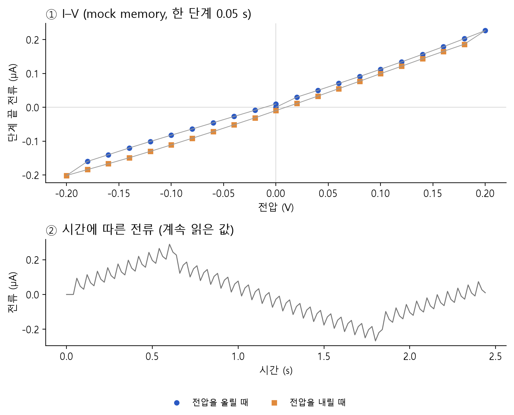
진짜 소자로 하는 순서 [실물 미검증]. 맨 위를 MOCK = False, ADDR, COMPLIANCE_A = 1e-5(많아도 1e-4), DEVICE_ID = "dev01"로 바꾼 뒤, 아래 세 번을 차례로 ▷ 합니다. 매번 NAME을 바꿉니다(진짜 측정은 덮어쓰지 않게 막혀 있음).
| 순서 | 바꿀 값 | 확인할 것 |
|---|---|---|
| 1 | VMAX = 0.2, NAME = "iv_dev01_02" |
0 hit compliance, 전류 범위 |
| 2 | VMAX = 0.4, NAME = "iv_dev01_04" |
1에서 이상(compliance, 갑자기 커지는 전류)이 없을 때만 |
| 3 | VMAX = 0.2, NAME = "iv_dev01_02b", COMPARE = ["iv_dev01_02"] |
처음 0.2 V sweep과 겹치나 (소자가 변했나) |
hit compliance가 0이 아니면 그 범위에서 전류 제한에 걸린 것입니다. 더 넓히지 않습니다.요청 전압 … V가 계획 상한 ±1.0 V를 벗어남→VMAX가 상한보다 큽니다. 상한을 올리기 전에 정말 필요한지 먼저 생각합니다.- 3에서 선이 달라졌다면 직전 범위에서 소자가 바뀐 것(전기화학 반응, ITO 손상 등)이므로 그 아래까지만 씁니다. 기포·변색·박리(층이 들뜸)도 눈으로 봅니다.
P2.1-2. sweep 속도를 바꾼 I–V
같은 길을 걸어갈 때와 뛰어갈 때 보이는 풍경이 다르듯, 같은 sweep도 천천히 할 때와 빨리 할 때 모양이 다를 수 있습니다. 소자 안에 느리게 움직이는 무언가(예: 이온)가 있으면, 빨리 sweep할 때 따라오지 못해 고리가 벌어집니다.
할 일 [실물 미검증] 실습 6에서 DWELL과 NAME만 바꿔 세 번 ▷: DWELL = 0.02(iv_dev01_d002), 0.1(iv_dev01_d01), 0.5(iv_dev01_d05). 마지막에 COMPARE = ["iv_dev01_d002", "iv_dev01_d01"]을 넣으면 세 고리가 한 그림에 겹쳐집니다. resistor와 series RC도 같은 방법으로 재서 나란히 놓습니다.
mock에서 미리 보기: MOCK_MODEL = "series_rc"로 바꿔 ▷. 고리 모양이 어떻게 달라지나요?
RC는 크게 벌어진 고리가 됩니다. 전압을 올리는 동안 capacitor가 차느라 + 전류가 흐르고, 내리는 동안 빠지느라 − 전류가 흘러서, 같은 0.1 V에서도 올릴 때 약 +0.045 µA, 내릴 때 약 −0.03 µA입니다. 고리가 있다는 것만으로 이온 때문이라고 말할 수 없는 이유입니다. 진짜 소자의 고리는 RC의 고리와 모양·속도 의존을 비교해야 합니다.
PS C:\Users\내이름\Desktop\ion-projects-code> & python mylabs/p2_6_iv.py
instrument : MOCK SMU (model: series_rc)
saved : runs/iv_mock.npz (123 reads, 0 hit compliance)
steps : 41 (0 -> +0.2 -> 0 -> -0.2 -> 0 V)
current : min -0.057 uA, max +0.054 uA
loop width : largest at +0.08 V, up - down = +0.078 uA
PS C:\Users\내이름\Desktop\ion-projects-code>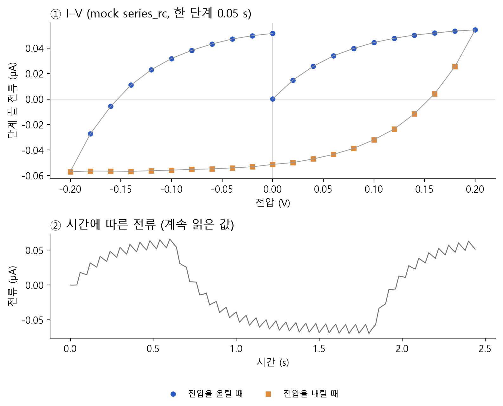
MOCK_MODEL = "series_rc"의 I–V. 올릴 때(파랑)와 내릴 때(주황)가 크게 갈라진 고리입니다.
P2.1-3. 쓰기–쉬기–읽기: 실습 4를 내 소자에
실습 4와 같은 실험을 내 소자에 합니다. 쉬는 시간을 다섯 가지(0.1–10초)로 늘려, 흔적이 몇 초에 걸쳐 사라지는지 봅니다. 읽기 전류의 모양이 아래 세 가지 중 어느 것에 가까운지 봅니다.
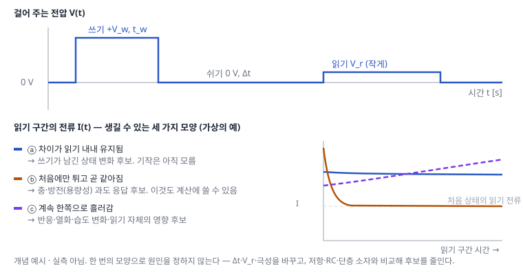
할 일 [실물 미검증] p2_4_wrr.py 맨 위를 이렇게 바꾸고 ▷(약 2분). VW·VR은 쓸 전압 범위 안으로 고릅니다. 읽기 전압은 I–V가 거의 곧은 작은 값(읽기가 소자를 바꾸지 않게).
MOCK = False
GAPS = [0.1, 0.3, 1, 3, 10]
NAME = "wrr_dev01"
DEVICE_ID = "dev01"그다음 control 세 개도 같은 전압으로 잽니다(배선만 바꾸고 NAME을 "wrr_rc", "wrr_r1M", "wrr_single01"로). 마지막 측정에서 COMPARE = ["wrr_dev01", "wrr_rc", "wrr_r1M"]을 넣으면 그림 ③에 네 곡선이 겹쳐집니다.
mock에서 미리 보기. 기억 있는 가짜 소자(memory)를 같은 쉬기 다섯 가지로 재고, 실습 4의 mock RC를 COMPARE로 겹친 결과입니다.
PS C:\Users\내이름\Desktop\ion-projects-code> & python mylabs/p2_4_wrr.py
instrument : MOCK SMU (model: memory)
saved : runs/wrr_mem_mock.npz (4692 reads, 0 hit compliance)
rest (s) write I_read_first (uA) I_read_late (uA)
0.1 +0.5 V 0.248 0.058
0.1 -0.5 V 0.221 0.044
0.3 +0.5 V 0.243 0.056
0.3 -0.5 V 0.225 0.047
1 +0.5 V 0.236 0.052
1 -0.5 V 0.232 0.050
3 +0.5 V 0.234 0.051
3 -0.5 V 0.234 0.051
10 +0.5 V 0.234 0.051
10 -0.5 V 0.234 0.051
rest (s) trace = (+write) - (-write) (uA)
0.1 +0.027
0.3 +0.018
1 +0.004
3 +0.000
10 +0.000
PS C:\Users\내이름\Desktop\ion-projects-code>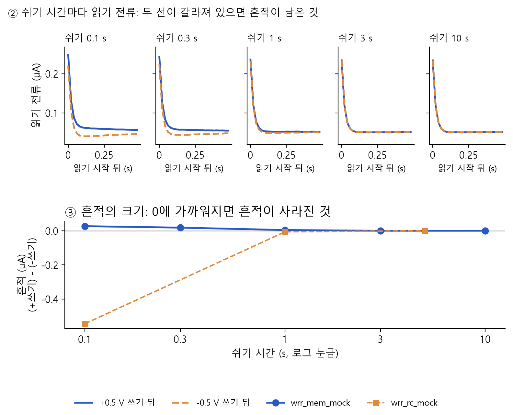
COMPARE로 겹친 실습 4의 mock RC(−0.55 µA에서 1초쯤 0으로). 두 흔적은 부호도 크기도 다릅니다. 진짜 소자에서는 이 자리에 내 소자·RC·resistor·한 층 소자가 겹쳐집니다.
| 관측 | 가능한 원인 (여러 개가 동시에 있을 수 있음) | 후보를 줄이는 control 실험 |
|---|---|---|
| 차이가 읽기 내내 유지됨 (ⓐ) | 이온 분포·저항 state 변화, 계면 분극(전극 면에 전하가 쌓임)의 느린 해소, 전기화학 반응 생성물 | 쉬기·읽기 전압 바꾸기, 한 층 소자, 반복 후 처음 state로 돌아오는지 |
| 처음에만 튀고 같아짐 (ⓑ) | 전극 계면·벌크(층 안쪽)의 충·방전 | 진짜 RC와 모양 비교, 읽기를 길게(TR) |
| 한쪽으로 계속 흘러감 (ⓒ) | 반응·열화, 습도·온도 변화, 읽기 자체가 state를 바꿈 | 쓰기 없이 읽기만 반복, 환경 기록, 읽기 전압 낮추기 |
drift: ⓒ처럼, 같은 조건인데 시간이 지나며 값이 한쪽으로 흘러가는 것. 흔적이 아니라 소자가 변하고 있다는 신호일 수 있습니다.
질문. 내 소자의 읽기 전류는 그림 13의 ⓐ ⓑ ⓒ 중 어느 모양에 가까운가? 근거 숫자 두 개는?
정해진 답은 없습니다. 내 소자의 숫자로 판단합니다.
- ⓑ (RC와 같은 모양): + / − 쓰기의 차이가
I_read_first에는 있는데I_read_late에서는 거의 없어짐. 쉬기가 τ의 몇 배쯤 되면I_read_first의 차이도 사라짐. - ⓐ:
I_read_late에서도 차이가 남음. 쉬기 10초에서도 남으면 흔적이 10초 넘게 간다는 뜻. - ⓒ: 쓰기 방향과 상관없이 값이 한쪽으로 계속 커지거나 작아짐.
근거로는 "쉬기 0.1초의 trace"와 "trace가 절반쯤 되는 쉬기 시간"을 적으면 좋습니다.
"멤리스터다", "이온이 이동해서다" 같은 결론은 위 표의 다른 후보를 control로 줄인 뒤에 씁니다. capacitor처럼 찼다가 빠지는 흔적(ⓑ)도 시간 정보를 담기 때문에 계산에 쓸 수 있습니다. 흔적이 어떤 원리로 생겼는지와 그 흔적을 계산에 쓸 수 있는지는 별개의 질문입니다.
P2.1-4. 실습 7. paired-pulse: 두 자극 사이 간격의 흔적 (p2_7_ppf.py)
종을 한 번 치고 아직 울리는 동안 또 치면 두 번째 소리가 다르게 들립니다. 울림이 다 그친 뒤에 치면 첫 번째와 같습니다. 같은 pulse를 두 번 걸되 간격을 바꿔 가며, 두 번째 pulse의 전류가 첫 번째와 달라지는 간격을 찾습니다. 그 간격이 "흔적이 남는 시간"입니다.
paired-pulse (ppf): 같은 pulse를 두 번, 간격을 바꿔 거는 실험. (ppf = paired-pulse facilitation, 두 번째가 커지는 현상의 이름)
ratio: 두 번째 pulse 끝 전류 ÷ 첫 번째(I2 / I1). ratio가 1이면 이 조건(이 간격·이 전압·pulse 끝 전류)에서 차이를 찾지 못했다는 뜻입니다. 흔적이 정말 없다는 증명은 아닙니다. 흔적이 측정 잡음보다 작거나, 고른 간격 밖의 시간 규모이거나, pulse 끝 전류가 아닌 다른 값(전류 모양, 흐른 전하)에 남았을 수도 있습니다.
할 일 mylabs에 새 파일 p2_7_ppf.py → 붙여 넣기 → Ctrl+S → ▷ (mock으로 먼저).
mylabs/p2_7_ppf.py
# ============================================================
# P2 실습 7 · paired-pulse: 같은 pulse를 두 번, 간격을 바꿔 가며
#
# 전체 과정:
#
# GAPS의 간격마다:
# 0 V로 5초 기다리기 (흔적 지우기)
# → pulse 1: VP를 TP초 → 끝 전류 I1
# → 0 V로 GAP초
# → pulse 2: 같은 VP를 TP초 → 끝 전류 I2
# ↓
# ratio = I2 / I1
# 1이면 이 조건에서는 두 pulse의 차이를 못 찾았다 (흔적이 없다는 증명은 아님)
# 1보다 크거나 작으면 간격 동안 흔적이 남아 있었다
# ↓
# 그래프 ① 간격에 따른 ratio ② 가장 짧은 간격의 전류 기록
# ============================================================
import json
import sys
import types
from pathlib import Path
import numpy as np
import matplotlib.pyplot as plt
CODE = Path(__file__).resolve().parent.parent # ion-projects-code 폴더
sys.path.insert(0, str(CODE / "python")) # 공용 코드 폴더를 찾을 수 있게
from smu import open_smu # 장비(진짜 또는 mock)를 여는 함수
from a1_tests import Recorder, run_ppf # paired-pulse 순서 (python/a1_tests.py)
from common import atomic_save_npz
# ============================================================
# 0. 그림 설정 — 건드리지 않아도 됩니다
# ============================================================
plt.rcParams.update({
"font.family": "Malgun Gothic", "axes.unicode_minus": False, "font.size": 11,
"legend.frameon": False, "axes.spines.top": False, "axes.spines.right": False,
})
# ============================================================
# 1. 바꿔 볼 수 있는 설정값 ← 여기를 바꿔 보세요
# ============================================================
MOCK = True # True = 가짜 장비, False = 진짜 소스미터
MOCK_MODEL = "memory" # mock 안의 가짜 소자: "memory", "series_rc", "resistor"
VP, TP = 0.5, 0.2 # pulse 높이 (V), 길이 (초)
GAPS = [0.05, 0.1, 0.2, 0.5, 1, 2, 5] # 두 pulse 사이 간격 (초)
NAME = "ppf_mock" # 저장 이름 → runs\ppf_mock.npz
COMPARE = [] # ①에 같이 그릴 예전 결과. 예: ["ppf_rc"]
# --- 진짜 장비일 때만 쓰는 값 (MOCK = False) ---
ADDR = "GPIB0::24::INSTR"
COMPLIANCE_A = 1e-5
DEVICE_ID = "dev01"
# ============================================================
# 2. 장비 설정
# ============================================================
cfg = json.loads((CODE / "python" / "config_example.json").read_text(encoding="utf-8"))
inst = cfg["instrument"]
if MOCK:
inst["mock"]["model"] = MOCK_MODEL
else:
inst.update(addr=ADDR, compliance_A=COMPLIANCE_A)
cfg["device"]["id"] = DEVICE_ID
out = CODE / "runs" / NAME
out.parent.mkdir(exist_ok=True)
if not MOCK and out.with_suffix(".npz").exists():
raise SystemExit(f"runs/{NAME}.npz가 이미 있습니다. 진짜 측정은 덮어쓰지 않도록 NAME을 바꾸세요.")
# ============================================================
# 3. 측정 (python/a1_tests.py의 run_ppf)
# ============================================================
a = types.SimpleNamespace(vp=VP, tp=TP, gaps=GAPS, settle=5.0)
with open_smu(inst, mock=MOCK) as smu:
print(f"instrument : {smu.idn}" + (f" (model: {MOCK_MODEL})" if MOCK else ""))
smu.enable()
rec = Recorder(smu)
summary = run_ppf(rec, a)
d = rec.arrays()
atomic_save_npz(str(out) + ".npz", **d, **{"sum_" + k: v for k, v in summary.items()})
print(f"saved : runs/{NAME}.npz ({len(d['t'])} reads, {int(d['compliance'].sum())} hit compliance)")
print()
print("gap (s) I1 (uA) I2 (uA) ratio I2/I1")
for g, i1, i2, r in zip(summary["gap"], summary["I1"], summary["I2"], summary["ratio"]):
print(f"{g:>7g} {i1 * 1e6:7.3f} {i2 * 1e6:7.3f} {r:8.3f}")
# ============================================================
# 4. 그래프 ① 간격에 따른 ratio ② 가장 짧은 간격의 전류
# ============================================================
fig, (ax1, ax2) = plt.subplots(2, 1, figsize=(8, 6.2), gridspec_kw={"height_ratios": [1.3, 1]})
ax1.axhline(1, color="0.6", lw=1, ls=":")
ax1.plot(GAPS, summary["ratio"], "o-", color="#2b59c3", lw=2, ms=7, label=NAME)
colors = ["#e08a3c", "#2f9e6e", "#8e5bc4", "#7a7f87"]
for c, other in zip(colors, COMPARE):
p = CODE / "runs" / f"{other}.npz"
if not p.exists():
print(f"(COMPARE: runs/{other}.npz가 없어 건너뜀)")
continue
with np.load(p) as o:
ax1.plot(o["sum_gap"], o["sum_ratio"], "s--", color=c, lw=1.6, ms=6, label=other)
ax1.set_xscale("log")
ax1.set_xticks(GAPS, [f"{g:g}" for g in GAPS])
ax1.minorticks_off()
ax1.set_xlabel("두 pulse 사이 간격 (s, 로그 눈금)")
ax1.set_ylabel("ratio = I2 / I1")
ax1.set_title("① 간격이 짧을수록 1에서 멀어지면, 흔적이 남아 있던 것 (점선 = 1)", loc="left")
# 가장 짧은 간격의 묶음만 잘라 보기: seg 이름이 pulse1 → gap → pulse2 인 첫 덩어리
names = list(d["seg_names"])
k1, k2 = names.index("pulse1"), names.index("pulse2")
s = np.where(d["seg"] == k1)[0][0]
e = np.where(d["seg"] == k2)[0]
e = e[e > s]
e_end = e[np.r_[np.diff(e) > 1, True]][0] # 첫 pulse2 덩어리의 끝
sl = slice(max(0, s - 5), e_end + 6)
t0 = d["t"][s]
ax2.plot((d["t"][sl] - t0) * 1000, d["I"][sl] * 1e6, color="0.45", lw=1.2)
i1_idx = np.where(d["seg"] == k1)[0]
i1_end = i1_idx[np.r_[np.diff(i1_idx) > 1, True]][0]
ax2.plot([(d["t"][i1_end] - t0) * 1000, (d["t"][e_end] - t0) * 1000],
[d["I"][i1_end] * 1e6, d["I"][e_end] * 1e6], "o", color="#c0392b", ms=8)
ax2.set_xlabel(f"시간 (ms, pulse 1의 첫 읽기 = 0) · 간격 {GAPS[0]:g} s")
ax2.set_ylabel("전류 (µA)")
ax2.set_title("② 가장 짧은 간격: 빨간 점 = I1, I2 (pulse 끝 전류)", loc="left")
fig.tight_layout(rect=(0, 0.06, 1, 1))
fig.legend(*ax1.get_legend_handles_labels(), loc="lower center", ncol=4, fontsize=9.5)
plt.show() # 그림 창을 닫으면 프로그램이 끝납니다.▷ 실행하면 (mock memory):
PS C:\Users\내이름\Desktop\ion-projects-code> & python mylabs/p2_7_ppf.py
instrument : MOCK SMU (model: memory)
saved : runs/ppf_mock.npz (2333 reads, 0 hit compliance)
gap (s) I1 (uA) I2 (uA) ratio I2/I1
0.05 0.609 0.651 1.068
0.1 0.609 0.648 1.064
0.2 0.609 0.640 1.052
0.5 0.609 0.626 1.028
1 0.609 0.615 1.010
2 0.609 0.609 1.001
5 0.609 0.608 0.999
PS C:\Users\내이름\Desktop\ion-projects-code>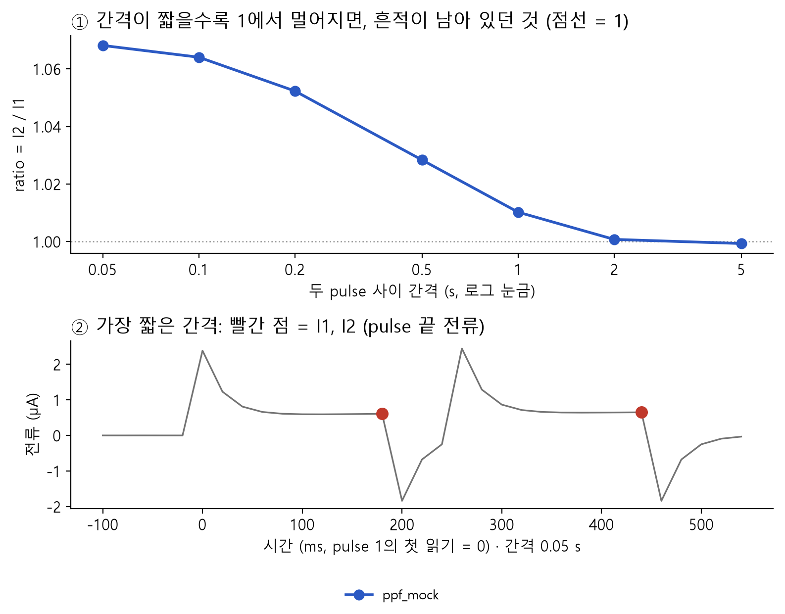
결과가 뜻하는 것. 가짜 소자는 간격이 짧을수록 두 번째 전류가 커지고(최대 7%), 약 1–2초를 넘으면 ratio가 1.00이 되어 이 mock의 잡음 수준에서는 차이가 보이지 않습니다. 가짜 소자에 넣은 τ = 0.5초와 맞는 시간 규모입니다.
진짜 소자 [실물 미검증]. MOCK = False, NAME = "ppf_dev01", VP는 쓸 전압 범위 안으로. series RC도 NAME = "ppf_rc"로 재고, 소자 측정 때 COMPARE = ["ppf_rc"]로 겹칩니다. mock RC는 ratio가 0.53(간격 0.05초)에서 1로 올라가는 반대 방향 모양입니다(MOCK_MODEL = "series_rc"로 확인 가능). 간격 0.05초처럼 짧은 값은 실제 pulse 길이 문제에 걸리므로 기록된 시각을 확인하고, resistor에서도 ratio가 1이 아니면 타이밍 문제입니다.
P2.1-5. EIS (potentiostat가 있으면)
지금까지는 전압을 "켰다 껐다" 했습니다. EIS는 전압을 그네처럼 아주 작게 앞뒤로 흔들어 봅니다. 천천히 흔들 때와 빨리 흔들 때 전류가 얼마나 잘 따라오는지 보면, 소자 안에 빠른 과정과 느린 과정이 각각 몇 개 있는지 짐작할 수 있습니다.
EIS (electrochemical impedance spectroscopy): 아주 작은 교류 전압을 여러 주파수(1초에 몇 번 흔드는지)로 걸어 "전류가 얼마나, 얼마나 늦게 따라오는지"를 재는 방법. 전용 장비 potentiostat가 필요합니다.
이 코드 묶음에는 EIS 프로그램이 없습니다. potentiostat 자체 소프트웨어로 측정합니다. 읽을 때 주의할 점:
- 반원의 지름을 항상 고분자 층 자체의 저항으로 읽을 수는 없습니다. 두 고분자 층, 접합면, 두 전극 면이 있어 반원이 겹치거나 여러 개일 수 있습니다.
- 먼저 진폭을 바꿔(5, 10, 20 mV) 결과가 같은지(선형성), 측정 전후가 같은지(재는 동안 소자가 안 변했는지)를 봅니다.
- R·C 조합(equivalent circuit)으로 흉내 낼 때는 가장 단순한 것부터 맞추고, 맞춘 값은 "이 모델·이 주파수 범위에서의 값"으로 보고합니다.
P2.1-6. 특성표
P2.1의 결과물은 이 표입니다. 빈칸은 측정하기 전까지 비워 둡니다.
| 항목 | 값 | 지지하는 관측 (파일 이름) | 아직 배제하지 못한 설명 |
|---|---|---|---|
| 쓸 전압 범위 | iv_dev01_* |
||
| 그 범위의 전류 최소·최대 | |||
| 흔적이 줄어드는 시간 규모 (쓰기–쉬기–읽기, paired-pulse) | wrr_dev01, ppf_dev01 |
지수 하나로 맞는지도 적기 | |
| 100회 반복 후 변화 | |||
| 소자 간 편차 (3개 이상) | |||
| 온도·습도 의존 |
"지수 하나로 맞는지"는 흔적이 RC처럼 τ 하나의 속도로 줄어드는지, 아니면 빠른 부분과 느린 부분이 섞여 있는지를 적으라는 뜻입니다. 이 표의 전압·전류 범위가 P3의 부품 선택을 정합니다.
다음 단계 조건. 특성표의 첫 세 줄(전압 범위, 전류 범위, 시간 규모)이 채워졌으면 P2.2로 갑니다.
P2.2. 작은 synthetic 과제: "끝만 보고도 앞을 기억하는가"
P2.0에서 mock 소자로 푼 시험지를 이번에는 진짜 소자가 풉니다. 시험지는 같고 학생만 바뀝니다. mock 소자는 1.00, mock 저항은 찍기 수준이었습니다. 내 소자는 어디쯤일까요? 새 실습 파일은 없습니다. 실습 1–3을 설정만 바꿔 다시 씁니다.
| 순서 | 파일 | 바꿀 값 | 결과로 보는 것 |
|---|---|---|---|
| 1 | 실습 1 p2_1_task.py |
N_PER_CLASS = 40, TASK_NAME = "task_a2" |
문제 80개 (test 24개) |
| 2 | 실습 2 p2_2_measure.py |
MOCK = False, TASK_NAME = "task_a2", RUN_NAME = "a2_dev01", LIMIT = 10 → 확인 뒤 LIMIT = None |
내 소자의 전압·전류, 마지막 4칸의 차이 |
| 3 | 실습 3 p2_3_readout.py |
TASK_NAME = "task_a2", RUNS = ["a2_dev01", "a2_r1M", "a2_rc", "a2_single01"] |
측정마다 점수 한 줄 |
synthetic 과제: 컴퓨터가 정해진 규칙으로 만든 연습용 입력. 정답을 알고 있으므로 채점할 수 있습니다.
full readout: 48개 숫자를 다 보고 답을 내는 것(실습 3의 END_ONLY = False). full이 높고 end-only가 낮으면, 소자가 입력을 받는 그 순간에는 반응하지만 흔적이 끝까지 남지는 않는다는 뜻입니다.
순서 [실물 미검증].
- 실습 1을 위 값으로 ▷. 문제가 두 배라 test가 24개로 늘어, 우연히 점수가 높게 나오는 일이 줄어듭니다.
- 실습 2를
LIMIT = 10으로 ▷(약 1–2분). 그림 ①에서 세 가지를 확인합니다: compliance 경고 줄이 없었는지, 전류가 0이 아니고 pulse마다 변하는지, 그림 ③의 막대가 0인지 아닌지. 괜찮으면LIMIT = None으로 다시 ▷(나머지 70개, 약 8–10분,resume: 10/80). 끝날 때까지 소자·클립을 건드리지 않습니다. - control(1 MΩ resistor, series RC, 한 층 소자)도 배선을 바꾸고
RUN_NAME만"a2_r1M","a2_rc","a2_single01"로 바꿔 2를 반복합니다. - 실습 3을
END_ONLY = True로 한 번,False로 한 번 ▷하고 아래 표를 채웁니다.
| 측정 | end-only balanced accuracy | full balanced accuracy | label shuffle |
|---|---|---|---|
| 입력 그대로 | 0.5 (구조상) | ||
| 1 MΩ resistor | |||
| series RC | |||
| 한 층 소자 | |||
| 접합 소자 |
"입력 그대로"는 소자 없이 입력 숫자만 넣은 경우로, 끝 4칸의 입력이 두 class에서 똑같으니 구조상 0.5입니다.
! trial N: … reads hit compliance→ pulse가 너무 셉니다. VS Code에서python\config_example.json을 열어"VA": 0.8(가장 큰 pulse 높이)을0.5처럼 줄이고 Ctrl+S → 실습 2를 새RUN_NAME으로 다시 ▷. 이 값은 모든 P2 실습(mock 포함)이 같이 읽으므로, 바꾼 값을 연구 노트에 적어 둡니다.기존 측정과 조건이 다릅니다→ 설정을 바꾼 뒤 같은 폴더로 이어 하려 한 것(의도된 동작).RUN_NAME을 새로.
질문. 접합 소자와 RC·resistor의 차이를 한 문장으로 적으면?
정해진 숫자는 없습니다. 내 표의 숫자로 이런 문장을 씁니다.
"end-only balanced accuracy는 접합 소자 , series RC , resistor _, 한 층 소자 _였다(label shuffle은 모두 0.5 근처). 그러므로 접합 소자의 흔적은 [RC보다 크다 / RC와 비슷하다 / 없다]."
읽는 법: resistor가 0.4–0.65면 정상(찍기 수준)입니다. 접합 소자가 resistor보다 높으면 흔적이 쓸모 있다는 첫 증거입니다. 그런데 RC도 비슷하게 높으면 "capacitor 같은 충·방전만으로도 풀리는 과제"라 접합의 특별함을 말할 수 없습니다. 한 층 소자도 높으면 흔적이 접합이 아닌 다른 곳에서 생긴 것일 수 있습니다. 한 번 측정으로 결론 내지 말고 다른 날 한 번 더 잽니다.
관찰할 점. trial이 적으면 우연히 0.6–0.7이 나올 수 있습니다(P2.0의 mock 저항처럼). series RC도 0.5보다 높게 나올 수 있습니다. 그렇다면 소자가 RC와 무엇이 다른지가 다음 질문입니다.
실습 8. memory capacity(MC): 몇 걸음 전까지 기억하나 (p2_8_mc.py)
누군가 숫자를 하나씩 불러 줄 때 "방금 숫자는? 그 전 숫자는? 세 개 전 숫자는?"을 몇 개 전까지 맞히는지 재는 것과 같습니다. 무작위 입력 600개를 한 줄로 걸고, 지금 state만 보고 1걸음 전, 2걸음 전, … 10걸음 전 입력을 얼마나 맞히는지 더합니다.
위의 class 과제는 "앞에 큰 입력이 있었나" 하나만 묻지만, MC는 몇 걸음 전까지 기억하는지를 숫자 하나로 요약합니다. 같이 재 두면 소자끼리 비교하기 좋습니다.
r²: 맞힌 정도(0 = 전혀, 1 = 완벽).
memory capacity (MC): 1–10걸음 전 r²의 합. 1걸음 전은 완벽(1.0), 2걸음 전은 절반(0.5), 그 이상은 못 맞히면 MC ≈ 1.5.
null_q95 · MC_excess: 아무 관계 없는 무작위 목표로 같은 계산을 20번 했을 때 상위 5% 값 = "우연히도 이만큼은 나온다". r² 중 이것을 넘는 부분만 더한 값이 MC_excess(우연을 뺀 기억)이고, 이것을 봅니다.
할 일 mylabs에 새 파일 p2_8_mc.py → 붙여 넣기 → Ctrl+S → ▷ (약 5초).
mylabs/p2_8_mc.py
# ============================================================
# P2 실습 8 · memory capacity (MC): 몇 걸음 전 입력까지 기억하나
#
# 전체 과정:
#
# 0–1 사이 무작위 입력 K개를 한 줄로 (python/tasks.py의 mc_sequence)
# ↓
# 입력 하나 = pulse 4개 (실습 1과 같은 mask) → 소자에 차례로 걸기
# → 입력마다 state 4개 (pulse 끝 전류)
# ↓
# d = 1, 2, … 10 걸음 전 입력을 '지금 state 4개'로 얼마나 맞히나 (r², 0–1)
# (앞 2/3로 맞히는 법을 배우고, 뒤 1/3로 채점)
# ↓
# 우연히도 나오는 크기(null)와 비교 → 그보다 큰 부분만 더한 것 = MC_excess
# ↓
# 그래프: d마다 r² 막대 + 우연 기준선
# ============================================================
import json
import shutil
import sys
from pathlib import Path
import numpy as np
import matplotlib.pyplot as plt
CODE = Path(__file__).resolve().parent.parent # ion-projects-code 폴더
sys.path.insert(0, str(CODE / "python")) # 공용 코드 폴더를 찾을 수 있게
from smu import open_smu
from measure_seq import check_inputs, run_trials, smu_trial_fn # 실습 2와 같은 측정 순서
from tasks import mc_sequence # 무작위 입력 한 줄
from mc import memory_capacity # MC 계산 (python/mc.py)
# ============================================================
# 0. 그림 설정 — 건드리지 않아도 됩니다
# ============================================================
plt.rcParams.update({
"font.family": "Malgun Gothic", "axes.unicode_minus": False, "font.size": 11,
"legend.frameon": False, "axes.spines.top": False, "axes.spines.right": False,
})
# ============================================================
# 1. 바꿔 볼 수 있는 설정값 ← 여기를 바꿔 보세요
# ============================================================
MOCK = True # True = 가짜 장비, False = 진짜 소스미터
MOCK_MODEL = "memory" # "memory" (기억 있음) 또는 "resistor" (기억 없음)
K = 600 # 입력 개수. 진짜 장비에서는 600개 × pulse 4개 × 50 ms ≈ 2분 + 통신 시간
# --- 진짜 장비일 때만 쓰는 값 (MOCK = False) ---
ADDR = "GPIB0::24::INSTR"
COMPLIANCE_A = 1e-5
DEVICE_ID = "dev01"
RUN_NAME = "mc_dev01" # 결과 폴더 → runs\mc_dev01
# ============================================================
# 2. 입력 만들기 + 장비 설정
# ============================================================
U = mc_sequence(K) # 모양 (1, K): trial 1개 안에 입력 K개
cfg = json.loads((CODE / "python" / "config_example.json").read_text(encoding="utf-8"))
inst, enc = cfg["instrument"], cfg["encoding"]
M = len(enc["mask"])
if MOCK:
inst["mock"]["model"] = MOCK_MODEL
run_dir = CODE / "runs" / f"mc_mock_{MOCK_MODEL}"
shutil.rmtree(run_dir, ignore_errors=True) # mock 기록은 매번 새로
else:
inst.update(addr=ADDR, compliance_A=COMPLIANCE_A)
cfg["device"]["id"] = DEVICE_ID
run_dir = CODE / "runs" / RUN_NAME
check_inputs(U, enc, inst["v_limit_V"])
# ============================================================
# 3. 측정: 입력 K개 = pulse K × 4개를 한 번에 (trial 1개)
# ============================================================
print(f"inputs : {K} random values (0-1) -> {K * M} pulses, nominal {K * M * enc['theta_s'] / 60:.1f} min")
with open_smu(inst, mock=MOCK) as smu:
print(f"instrument : {smu.idn}" + (f" (model: {MOCK_MODEL})" if MOCK else ""))
smu.enable()
S, done = run_trials(cfg, U, str(run_dir), smu_trial_fn(smu, enc), K * M, log=lambda m: None)
print(f"saved : runs/{run_dir.name}")
X = S[0].reshape(K, M) # 입력마다 state 4개
# ============================================================
# 4. MC 계산 (python/mc.py)
# ============================================================
#
# r²(d): d걸음 전 입력을 지금 state로 맞힌 정도. 1 = 완벽, 0 = 전혀
# null_q95: 아무 관계 없는 무작위 목표로 같은 계산을 20번 했을 때 상위 5% 값
# = "우연히도 이만큼은 나온다"
# MC_excess: r² 중 null_q95를 넘는 부분만 더한 것 = 우연을 뺀 기억
# ============================================================
res = memory_capacity(X, U[0])
print()
print("d (steps back) r2")
for dd, r in enumerate(res["r2"], start=1):
print(f"{dd:>14} {r:.3f}")
print(f"\nnull_q95 : {res['null_q95']:.3f} (chance level)")
print(f"MC : {res['MC']:.2f} (sum of r2)")
print(f"MC_excess : {res['MC_excess']:.2f} (only the part above chance)")
# ============================================================
# 5. 그래프: d마다 r²
# ============================================================
dd = np.arange(1, len(res["r2"]) + 1)
fig, ax = plt.subplots(figsize=(8, 4.0))
ax.bar(dd, res["r2"], color=["#2b59c3" if r > res["null_q95"] else "#c9cfd8" for r in res["r2"]], width=0.65)
ax.axhline(res["null_q95"], color="#c0392b", lw=1.2, ls="--", label=f"우연 기준 null_q95 = {res['null_q95']:.3f}")
ax.set_xticks(dd)
ax.set_ylim(0, 1.08)
ax.set_xlabel("몇 걸음 전 입력을 맞히나 (d)")
ax.set_ylabel("r² (1 = 완벽)")
ax.set_title(f"MC_excess = {res['MC_excess']:.2f} ({'mock ' + MOCK_MODEL if MOCK else RUN_NAME}) · 파랑 = 우연보다 큼", loc="left")
fig.tight_layout(rect=(0, 0.08, 1, 1))
fig.legend(*ax.get_legend_handles_labels(), loc="lower center")
plt.show() # 그림 창을 닫으면 프로그램이 끝납니다.▷ 실행하면 (mock memory):
PS C:\Users\내이름\Desktop\ion-projects-code> & python mylabs/p2_8_mc.py
inputs : 600 random values (0-1) -> 2400 pulses, nominal 2.0 min
instrument : MOCK SMU (model: memory)
saved : runs/mc_mock_memory
d (steps back) r2
1 0.997
2 0.302
3 0.131
4 0.048
5 0.007
6 0.008
7 0.006
8 0.002
9 0.000
10 0.001
null_q95 : 0.020 (chance level)
MC : 1.50 (sum of r2)
MC_excess : 1.40 (only the part above chance)
PS C:\Users\내이름\Desktop\ion-projects-code>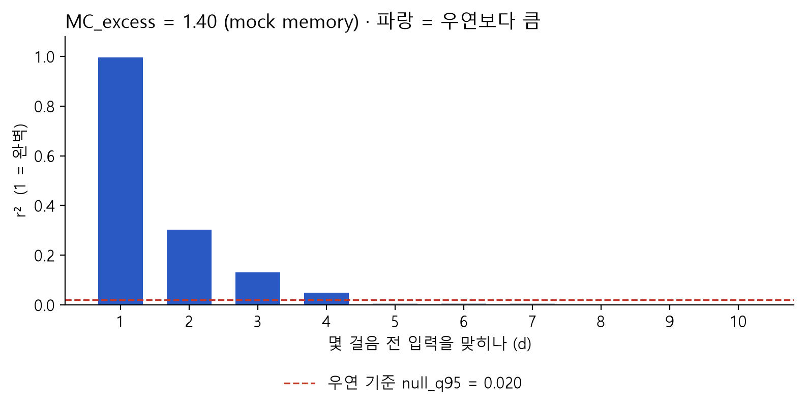
결과가 뜻하는 것. 가짜 소자는 MC 1.50, 우연을 뺀 MC_excess 1.40입니다. 대략 "1걸음 전은 확실히, 2–4걸음 전은 조금" 기억합니다.
MOCK_MODEL = "resistor"로 바꿔 ▷. MC_excess는 얼마가 될까요?
0.00입니다(MC 0.05). 저항의 전류는 지금 입력에만 비례하므로, 1걸음 전 입력조차 맞히지 못합니다. 막대가 모두 우연 기준선 아래(회색)입니다.
공정하게 재는 법. mc.py는 (1) 처음 50걸음은 버리고(washout: 측정을 막 시작했을 때는 소자가 이전 상태를 끌고 있으므로), (2) 앞 2/3로 배우고 뒤 1/3로 채점하며, (3) 무작위 목표로 같은 계산을 해서(null) 그보다 큰 부분만 셉니다. MC는 "이 입력에서 단순한 덧셈·곱셈(선형)으로 꺼낼 수 있는 과거 정보의 양"이지, 좋은 reservoir라는 증명서가 아닙니다.
진짜 소자 [실물 미검증]. MOCK = False, RUN_NAME = "mc_dev01". 입력 600개 × pulse 4개가 trial 1개라 수 분 동안 화면이 멈춘 듯 보여도 정상입니다. 중간에 끊기면 처음부터 다시 잽니다.
다음 단계 조건. 위 표의 다섯 줄(측정 기록이라 필수)이 채워지면 P2.2는 끝입니다. 접합 소자와 RC·resistor의 차이를 한 문장으로 적어 보기는 선택입니다. P2.2에서 수준 2 이상이 되었을 때만 P2.3으로 갑니다.
P2.3. (선택) ECG 박동으로 확장
지금까지는 우리가 정답을 정해 둔 연습 문제였습니다. P2.3은 진짜 환자의 심전도(ECG)라는 실전 문제입니다. 박동 하나를 입력 25칸으로 바꿔 소자에 걸고, 그 박동이 보통 박동(N 묶음)인지 심실에서 시작된 박동(V 묶음)인지 맞힙니다.
| 순서 | 파일 | 바꿀 값 | 결과로 보는 것 |
|---|---|---|---|
| 1 | 실습 9 p2_9_ecg.py (새 파일) |
없음 (인터넷 필요, 수 분) | N 묶음·V 묶음 박동 모양, runs\ecg_set.npz |
| 2 | 실습 2 | MOCK = False, TASK_NAME = "ecg_set", RUN_NAME = "ecg_dev01", LIMIT = 10 → None |
박동 600개 측정 (약 1시간 30분) |
| 3 | 실습 3 | TASK_NAME = "ecg_set", RUNS = ["ecg_dev01"], END_ONLY = False |
박동 분류 점수 |
데이터와 label. 인터넷에 공개된 PhysioNet의 MIT-BIH 부정맥 DB를 씁니다. 표준(AAMI) 묶음으로 class 0 = N 묶음(정상 N, 좌각차단 L, 우각차단 R, 심방·접합부 이탈 e·j), class 1 = V 묶음(심실조기수축 V, 심실 이탈 E)을 가립니다. "정상 대 비정상"이 아닙니다.
PhysioNet · MIT-BIH: 인터넷에 공개된 실제 환자 기록 모음(PhysioNet)과, 그중 부정맥(심장 박자가 불규칙한 것) 심전도 48개 묶음(MIT-BIH). 전문가가 박동마다 종류를 적어 두었습니다.
label: 정답 이름표. 여기서는 박동마다 붙은 N 또는 V.
GroupKFold: 연습 문제를 나눠 설정값을 고를 때(cross-validation) 사람 단위로 나누는 방법. 한 사람의 박동이 연습과 시험에 동시에 들어가지 않게 합니다. 실습 3이 groups(사람 번호)를 보고 자동으로 씁니다.
분할. 관행적인 나누기(DS1 = train 기록, DS2 = test 기록)를 씁니다. 그런데 PhysioNet 설명에 따르면 201과 202는 같은 사람의 기록입니다. 같은 사람의 박동이 연습과 시험에 둘 다 있으면 사람을 외워서 맞히는 것이라 점수가 부풉니다. 그래서 202를 test에서 뺍니다.
전처리는 'offline'입니다. 전체 기록과 전문가가 표시한 R 봉우리 위치를 쓰고, 앞뒤를 다 보는 filter를 씁니다. 실시간 장치는 R 봉우리를 스스로 찾아야 하고 미래 값을 볼 수 없으므로 다른 과제입니다. 360 Hz → 36 Hz로 줄이면 18 Hz 이상 성분이 사라져 QRS(박동의 뾰족한 부분)의 날카로운 모양이 무뎌집니다(P1.1에서 점이 띄엄띄엄하면 봉우리를 놓친 것과 같은 문제를 막으려고 미리 지움). 그래서 이 결과는 "36 Hz로 줄인 박동 모양에서의 구별"입니다.
시간. 박동 하나 = 25칸 × pulse 4개 × 50 ms = 5초 + 쉬기 2초 ≈ 7초. 600박동이면 명목 70분에 통신 시간이 더해집니다. 저장된 박동을 하나씩 재생하는 실험이고, 실시간 처리가 아닙니다.
할 일 mylabs에 새 파일 p2_9_ecg.py → 붙여 넣기 → Ctrl+S → ▷. 기록 40여 개를 내려받느라 수 분 걸립니다. 처음 흐름만 보려면 QUICK = True(기록 몇 개만).
mylabs/p2_9_ecg.py
# ============================================================
# P2 실습 9 · (선택) 진짜 심전도에서 박동을 잘라 입력 만들기
#
# 전체 과정:
#
# PhysioNet의 MIT-BIH 부정맥 기록을 인터넷에서 내려받기 (처음 한 번, 수 분)
# ↓
# 기록마다: 기준선 흔들림 거르기 → 360 Hz를 36 Hz로 줄이기
# → 전문가가 표시한 R 봉우리 앞 0.25초 ~ 뒤 0.45초를 잘라 박동 하나 (25칸)
# ↓
# 박동 이름표: N 묶음(비이소성) = class 0, V 묶음(심실 이소성) = class 1
# train 기록 묶음과 test 기록 묶음은 사람이 겹치지 않게 (201과 202는 같은 사람)
# ↓
# 0–1로 크기를 맞춰 저장 → runs\ecg_set.npz
# (실습 2의 TASK_NAME = "ecg_set"으로 소자에 걸고, 실습 3으로 채점)
# ↓
# 그래프: N 묶음과 V 묶음 박동의 모양
#
# 필요: 인터넷, wfdb package (python -m pip install wfdb)
# ============================================================
import sys
from pathlib import Path
import numpy as np
import matplotlib.pyplot as plt
CODE = Path(__file__).resolve().parent.parent # ion-projects-code 폴더
sys.path.insert(0, str(CODE / "python")) # 공용 코드 폴더를 찾을 수 있게
from ecg_prep import splits, collect, balanced_pick # python/ecg_prep.py의 함수들
# ============================================================
# 0. 그림 설정 — 건드리지 않아도 됩니다
# ============================================================
plt.rcParams.update({
"font.family": "Malgun Gothic", "axes.unicode_minus": False, "font.size": 11,
"legend.frameon": False, "axes.spines.top": False, "axes.spines.right": False,
})
# ============================================================
# 1. 바꿔 볼 수 있는 설정값 ← 여기를 바꿔 보세요
# ============================================================
N_TRAIN = 200 # train: class마다 박동 수
N_TEST = 100 # test: class마다 박동 수
FS_OUT = 36.0 # 줄인 뒤 sampling rate (Hz). 박동 하나 = 0.7초 × 36 = 25칸
QUICK = False # True면 기록 몇 개만 내려받아 빨리 흐름만 확인 (점수용 아님)
OUT_NAME = "ecg_set" # 저장 이름 → runs\ecg_set.npz
# ============================================================
# 2. 기록 내려받아 박동 자르기 (시간이 걸립니다. 화면이 멈춘 듯 보여도 기다립니다)
# ============================================================
tr_recs, te_recs = splits(strict=True) # 202는 test에서 빠짐 (201과 같은 사람)
if QUICK:
tr_recs, te_recs = tr_recs[:3], te_recs[:3]
print(f"records : train {len(tr_recs)}, test {len(te_recs)} (downloading...)")
Xtr, ytr, gtr, rtr = collect(tr_recs, FS_OUT)
Xte, yte, gte, rte = collect(te_recs, FS_OUT)
rng = np.random.default_rng(1)
i, j = balanced_pick(ytr, N_TRAIN, rng), balanced_pick(yte, N_TEST, rng)
lo, hi = np.percentile(Xtr[i], [1, 99]) # 크기 기준은 train 박동으로만 정한다
scale = lambda X: np.clip((X - lo) / (hi - lo), 0, 1)
U = np.r_[scale(Xtr[i]), scale(Xte[j])]
y = np.r_[ytr[i], yte[j]]
groups = np.r_[gtr[i], gte[j]]
n = len(i)
# ============================================================
# 3. 저장 (실습 2·3이 읽는 형식: U, y, groups, train_idx, test_idx)
# ============================================================
out = CODE / "runs" / f"{OUT_NAME}.npz"
out.parent.mkdir(exist_ok=True)
np.savez(out, U=U, y=y, groups=groups, record=np.r_[rtr[i], rte[j]],
train_idx=np.arange(n), test_idx=np.arange(n, len(U)), scale_lo=lo, scale_hi=hi, fs=FS_OUT,
end_cols=np.arange(U.shape[1] * 4), # ECG는 박동 전체를 읽는다 (END_ONLY = False로 채점)
class_names=np.array(["0 = N group (non-ectopic)", "1 = V group (ventricular ectopic)"]))
both = sorted(set(gtr[i]) & set(gte[j]))
print(f"beats : {U.shape[0]} x {U.shape[1]} steps, train {n} / test {len(U) - n}")
print(f"class 0 / 1: {np.sum(y == 0)} / {np.sum(y == 1)}")
print(f"people in both train and test: {both or 'none'}")
print(f"saved : runs/{OUT_NAME}.npz")
# ============================================================
# 4. 그래프: N 묶음과 V 묶음 박동의 모양
# ============================================================
t = (np.arange(U.shape[1]) - round(0.25 * FS_OUT)) / FS_OUT * 1000 # R 봉우리 = 0 ms
fig, axs = plt.subplots(1, 2, figsize=(8, 3.8), sharey=True)
for ax, c, col, name in [(axs[0], 0, "#2b59c3", "class 0: N 묶음"), (axs[1], 1, "#e08a3c", "class 1: V 묶음")]:
beats = U[:n][y[:n] == c]
for b in beats[:15]:
ax.plot(t, b, color=col, lw=0.6, alpha=0.35)
ax.plot(t, beats.mean(0), color=col, lw=2.5)
ax.axvline(0, color="0.8", lw=0.8, ls=":")
ax.set_title(f"{name} (train {len(beats)}개)", loc="left")
ax.set_xlabel("R 봉우리 기준 시간 (ms)")
axs[0].set_ylabel("입력 u (0–1)")
fig.tight_layout()
plt.show() # 그림 창을 닫으면 프로그램이 끝납니다.▷ 실행하면 (2026-11-06에 한 번 실행, 약 7분) TERMINAL 마지막에 beats : 600 x 25 steps, train 400 / test 200, class 0 / 1: 300 / 300, people in both train and test: none이 찍히고 아래 그림 창이 뜹니다. 내려받기가 오래 걸려 이 페이지는 자동 실행 결과 대신 그때 받은 그림을 넣었습니다.
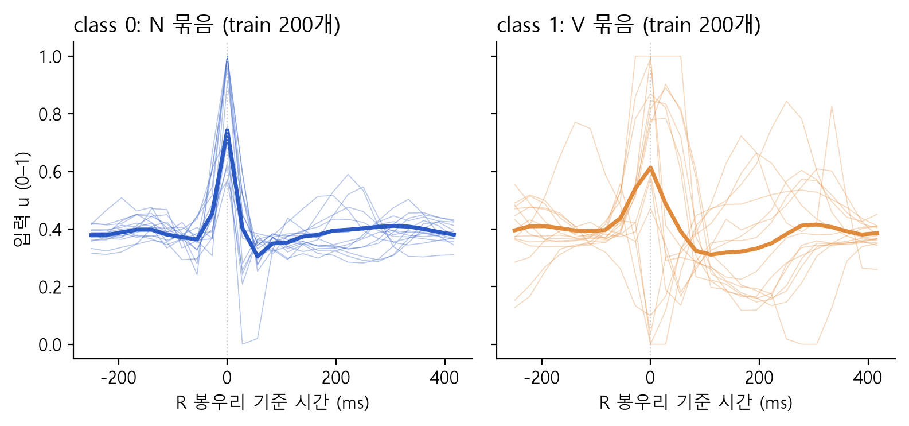
people in both train and test: none이 중요합니다. 연습과 시험에 같은 사람이 없다는 뜻입니다.- 측정 중 PC가 절전 모드로 들어가지 않게 합니다(설정 → 시스템 → 전원). 끊기면 같은 파일을 다시 ▷ 해 이어 갑니다.
비교는 P2.2와 같은 줄(입력 그대로, resistor, RC, 소자) + 같은 숫자 개수를 쓰는 디지털 baseline 모델(소자 없이 컴퓨터 계산만으로 같은 일을 하는 기준 모델)입니다. 정확도가 낮을 때 원인을 τ 하나로 정하지 않습니다. pulse로 바꾸는 방법(θ, mask, 전압 범위), 36 Hz로 줄이며 잃은 정보, 소자 drift, trial 수, label 묶음 자체의 어려움이 모두 후보입니다.
문제 해결
| 증상 | 확인할 것 |
|---|---|
ModuleNotFoundError: No module named 'smu' (또는 tasks, readout) |
내 파일이 ion-projects-code\mylabs 안에 있는지. 맨 위 CODE = … 두 줄을 지우지 않았는지 |
FileNotFoundError: … runs\task_p2.npz |
실습 1을 먼저 ▷ |
runs/mock_resistor 이 없습니다 |
실습 2를 MOCK_MODEL = "resistor"로 한 번 더 ▷ |
instrument : MOCK SMU인데 진짜 장비로 재려 했음 |
맨 위 MOCK = False로 바꾸고 Ctrl+S |
Could not locate a VISA implementation |
NI-VISA 설치 후 재부팅 (PC와 소스미터 잇기) |
| 장비 목록이 비어 있음 | NI MAX에 보이는지 → 어댑터 드라이버 → 장비 통신 설정 |
2400 계열이 아닙니다 |
이 코드는 2400 계열만 지원 (아래) |
| 전류가 compliance 값에 붙음 | 전압 낮추기, 두 ITO가 직접 닿았는지(합선) |
이어서 하기가 거부됨 / 이미 있습니다 |
설정이 바뀜 → RUN_NAME·NAME을 새로 (의도된 동작) |
| 그 밖의 오류 | TERMINAL 글자를 통째로 복사해 질문하는 법대로 |
(선택) 다른 소스미터 모델로 옮길 때 AI에게 묻는 법
아래 글을 AI 채팅 창에 붙여 넣고, python\smu.py 파일을 첨부합니다. [모델], [연결 방식]은 내 장비에 맞게 바꿉니다.
첨부한 smu.py는 Keithley 2400용이야. 내 장비는 [모델]이고 [연결 방식]으로 연결해.
같은 클래스 구조(open/enable/set_v/read/hold/close, 출력 자동 켜짐 없음, close에서 0 V→OFF를
단계별로 시도하고 실패 기록, compliance 상태 기록)를 유지하면서 이 모델 명령으로 바꿔 줘.
바꾼 명령마다 설명서의 어느 절을 근거로 했는지 적고, 확실하지 않은 것은 표시해 줘.